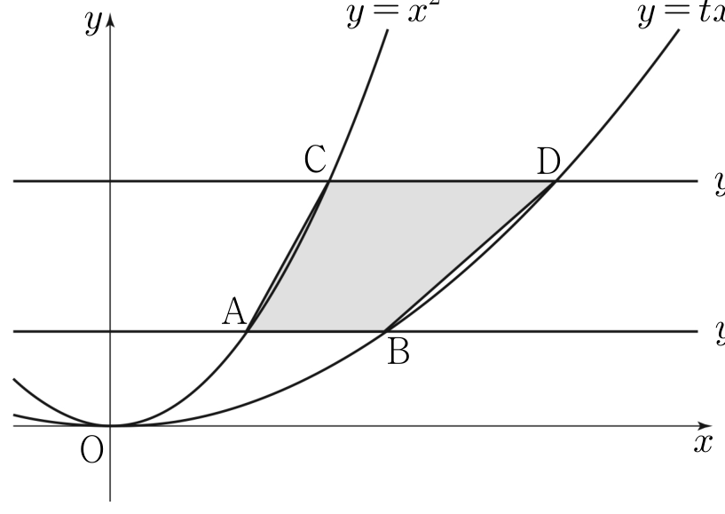
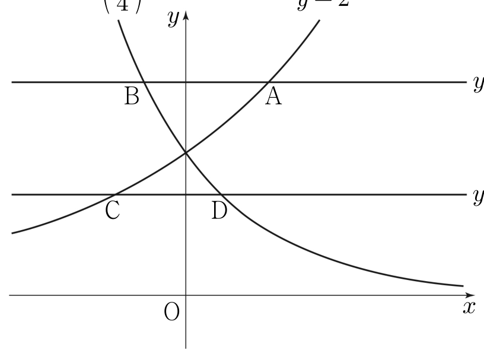

원본 (내부용)두 수열 \(\{a_n\}\), \(\{b_n\}\)에 대하여 \(\displaystyle\sum_{k=1}^{10}a_k=5,\ \sum_{k=1}^{10}b_k=20\)일 때, \( \sum_{k=1}^{10}(a_k+2b_k-1) \) 의 값은? [3점]
원본 (내부용)함수 \(f(x)=x^3+x^2-2x\)에서 \(x\)의 값이 \(0\)에서 \(k\)까지 변할 때의 평균변화율이 \(10\)일 때, 양수 \(k\)의 값은? [3점]
① \(3\)② \(\frac{7}{2}\)③ \(4\)④ \(\frac{9}{2}\)⑤ \(5\)
원본 정답 ①
원본 풀이 (내부용)[출제의도] 평균변화율 이해하기
함수 \(f(x)=x^3+x^2-2x\)에서 \(x\)의 값이 0에서 \(k\)까지 변할 때의 평균변화율은
\(
\frac{f(k)-f(0)}{k-0}
=\frac{(k^3+k^2-2k)-0}{k-0}
=k^2+k-2
\)
\(
k^2+k-2=10
\)
\(
(k+4)(k-3)=0\text{에서 }k=-4\text{ 또는 }k=3
\)
따라서 양수 \(k\)의 값은 3.
생성기 숫자판 1/5 · G2M10-02#6함수 $f\left(x\right)=x^{3}+3x$에서 $x$의 값이 $0$에서 $k$까지 변할 때의 평균변화율이 $7$일 때, 양수 $k$의 값으로 옳은 것을 고르세요.
원본 (내부용)닫힌구간 \([1,3]\)에서 정의된 함수 \(f(x)=\left(\frac{1}{2}\right)^{x-a}+1\)의 최댓값이 \(5\)일 때, 함수 \(f(x)\)의 최솟값은? (단, \(a\)는 상수이다.) [3점]
① \(\frac{3}{2}\)② \(2\)③ \(\frac{5}{2}\)④ \(3\)⑤ \(\frac{7}{2}\)
원본 정답 ②
원본 풀이 (내부용)[출제의도] 지수함수의 그래프 이해하기
닫힌구간 \([1,3]\)에서 함수
\(
f(x)=\left(\frac12\right)^{|x-a|}+1
\)
은 \(x\)의 값이 증가하면 \(y\)의 값은 감소한다.
그러므로 함수 \(f(x)\)는 \(x=1\)에서 최댓값 5를 갖는다.
\(
\left(\frac12\right)^{1-a}+1=5\text{에서 }2^{a-1}=2^2,\quad a=3
\)
함수 \(f(x)\)는 \(x=3\)에서 최솟값을 가지므로 구하는 최솟값은
\(
f(3)=\left(\frac12\right)^{3-3}+1=2
\)
생성기 숫자판 1/6 · G2M1-04#21닫힌구간 $\left[ 1,\ 3\right]$에서 정의된 함수 $f\left(x\right)=\left(\frac{1}{3}\right)^{x-a}$의 최댓값이 $27$일 때, 함수 $f\left(x\right)$의 최솟값으로 옳은 것을 고르세요. (단, $a$는 상수입니다.)
① $2$② $\frac{5}{2}$③ $3$④ $\frac{7}{2}$⑤ $4$
정답③ $3$ 밑 $\frac{1}{3}$이 $0$과 $1$ 사이이므로 $f\left(x\right)$는 $x=1$일 때 최대, $x=3$일 때 최소입니다. $f\left(1\right)=3^{a-1}=27$에서 $3^{a-1}=27$, $a=4$ 따라서 최솟값은 $f\left(3\right)=\left(\frac{1}{3}\right)^{-1}=3$
숫자: 원본 1 3 1 2 1 5 → 쌍둥이 1 3 1 3 27 · 같은 수: 1 3
생성기 숫자판 2/6 · G2M1-04#21닫힌구간 $\left[ 2,\ 4\right]$에서 정의된 함수 $f\left(x\right)=\left(\frac{1}{2}\right)^{x-a}+2$의 최댓값이 $6$일 때, 함수 $f\left(x\right)$의 최솟값으로 옳은 것을 고르세요. (단, $a$는 상수입니다.)
① $\frac{5}{2}$② $3$③ $\frac{7}{2}$④ $4$⑤ $5$
정답② $3$ 밑 $\frac{1}{2}$이 $0$과 $1$ 사이이므로 $f\left(x\right)$는 $x=2$일 때 최대, $x=4$일 때 최소입니다. $f\left(2\right)=2^{a-2}+2=6$에서 $2^{a-2}=4$, $a=4$ 따라서 최솟값은 $f\left(4\right)=\left(\frac{1}{2}\right)^{0}+2=3$
숫자: 원본 1 3 1 2 1 5 → 쌍둥이 2 4 1 2 2 6 · 같은 수: 1 2
생성기 숫자판 3/6 · G2M1-04#21닫힌구간 $\left[ 0,\ 2\right]$에서 정의된 함수 $f\left(x\right)=\left(\frac{1}{3}\right)^{x-a}+2$의 최댓값이 $29$일 때, 함수 $f\left(x\right)$의 최솟값으로 옳은 것을 고르세요. (단, $a$는 상수입니다.)
① $\frac{9}{2}$② $5$③ $\frac{11}{2}$④ $6$⑤ $7$
정답② $5$ 밑 $\frac{1}{3}$이 $0$과 $1$ 사이이므로 $f\left(x\right)$는 $x=0$일 때 최대, $x=2$일 때 최소입니다. $f\left(0\right)=3^{a-0}+2=29$에서 $3^{a}=27$, $a=3$ 따라서 최솟값은 $f\left(2\right)=\left(\frac{1}{3}\right)^{-1}+2=5$
생성기 숫자판 4/6 · G2M1-04#21닫힌구간 $\left[ 0,\ 2\right]$에서 정의된 함수 $f\left(x\right)=\left(\frac{1}{3}\right)^{x-a}$의 최댓값이 $27$일 때, 함수 $f\left(x\right)$의 최솟값으로 옳은 것을 고르세요. (단, $a$는 상수입니다.)
① $\frac{5}{2}$② $3$③ $\frac{7}{2}$④ $4$⑤ $5$
정답② $3$ 밑 $\frac{1}{3}$이 $0$과 $1$ 사이이므로 $f\left(x\right)$는 $x=0$일 때 최대, $x=2$일 때 최소입니다. $f\left(0\right)=3^{a-0}=27$에서 $3^{a}=27$, $a=3$ 따라서 최솟값은 $f\left(2\right)=\left(\frac{1}{3}\right)^{-1}=3$
숫자: 원본 1 3 1 2 1 5 → 쌍둥이 0 2 1 3 27 · 같은 수: 1 2 3
생성기 숫자판 5/6 · G2M1-04#21닫힌구간 $\left[ 1,\ 3\right]$에서 정의된 함수 $f\left(x\right)=\left(\frac{1}{2}\right)^{x-a}$의 최댓값이 $8$일 때, 함수 $f\left(x\right)$의 최솟값으로 옳은 것을 고르세요. (단, $a$는 상수입니다.)
① $2$② $\frac{5}{2}$③ $3$④ $4$⑤ $7$
정답① $2$ 밑 $\frac{1}{2}$이 $0$과 $1$ 사이이므로 $f\left(x\right)$는 $x=1$일 때 최대, $x=3$일 때 최소입니다. $f\left(1\right)=2^{a-1}=8$에서 $2^{a-1}=8$, $a=4$ 따라서 최솟값은 $f\left(3\right)=\left(\frac{1}{2}\right)^{-1}=2$
숫자: 원본 1 3 1 2 1 5 → 쌍둥이 1 3 1 2 8 · 같은 수: 1 2 3
생성기 숫자판 6/6 · G2M1-04#21닫힌구간 $\left[ 1,\ 3\right]$에서 정의된 함수 $f\left(x\right)=\left(\frac{1}{3}\right)^{x-a}-1$의 최댓값이 $2$일 때, 함수 $f\left(x\right)$의 최솟값으로 옳은 것을 고르세요. (단, $a$는 상수입니다.)
① $-\frac{4}{3}$② $-\frac{7}{6}$③ $-\frac{2}{3}$④ $-\frac{1}{6}$⑤ $\frac{1}{3}$
정답③ $-\frac{2}{3}$ 밑 $\frac{1}{3}$이 $0$과 $1$ 사이이므로 $f\left(x\right)$는 $x=1$일 때 최대, $x=3$일 때 최소입니다. $f\left(1\right)=3^{a-1}-1=2$에서 $3^{a-1}=3$, $a=2$ 따라서 최솟값은 $f\left(3\right)=\left(\frac{1}{3}\right)^{1}-1=-\frac{2}{3}$
원본 (내부용)좌표평면 위의 점 \(P(4,-3)\)에 대하여 동경 \(OP\)가 나타내는 각의 크기를 \(\theta\)라 할 때, \(\sin\left(\frac{\pi}{2}+\theta\right)-\sin\theta\)의 값은? (단, \(O\)는 원점이고, \(x\)축의 양의 방향을 시초선으로 한다.) [3점]
① \(-1\)② \(-\frac{2}{5}\)③ \(\frac{1}{5}\)④ \(\frac{4}{5}\)⑤ \(\frac{7}{5}\)
생성기 숫자판 1/6 · G2M1-02b#5좌표평면 위의 점 $\mathrm{P}\left(-6,\ 8\right)$에 대하여 동경 $\mathrm{OP}$가 나타내는 각의 크기를 $\theta$라 할 때, $5\sin\left(\pi-\theta\right)$의 값으로 옳은 것을 고르세요. (단, $\mathrm{O}$는 원점이고, $x$축의 양의 방향을 시초선으로 합니다.)
생성기 숫자판 2/6 · G2M1-02b#5좌표평면 위의 점 $\mathrm{P}\left(12,\ 5\right)$에 대하여 동경 $\mathrm{OP}$가 나타내는 각의 크기를 $\theta$라 할 때, $\sin\left(\frac{3}{2}\pi+\theta\right)$의 값으로 옳은 것을 고르세요. (단, $\mathrm{O}$는 원점이고, $x$축의 양의 방향을 시초선으로 합니다.)
① $-1$② $-\frac{12}{13}$③ $-\frac{11}{13}$④ $-\frac{10}{13}$⑤ $-\frac{9}{13}$
생성기 숫자판 3/6 · G2M1-02b#5좌표평면 위의 점 $\mathrm{P}\left(-12,\ -5\right)$에 대하여 동경 $\mathrm{OP}$가 나타내는 각의 크기를 $\theta$라 할 때, $2\cos\left(\pi-\theta\right)+5\sin\left(\pi-\theta\right)$의 값으로 옳은 것을 고르세요. (단, $\mathrm{O}$는 원점이고, $x$축의 양의 방향을 시초선으로 합니다.)
① $-\frac{3}{13}$② $-\frac{2}{13}$③ $-\frac{1}{13}$④ $0$⑤ $\frac{1}{13}$
생성기 숫자판 4/6 · G2M1-02b#5좌표평면 위의 점 $\mathrm{P}\left(-6,\ -8\right)$에 대하여 동경 $\mathrm{OP}$가 나타내는 각의 크기를 $\theta$라 할 때, $2\sin\left(\frac{3}{2}\pi-\theta\right)+3\cos\left(\frac{\pi}{2}+\theta\right)$의 값으로 옳은 것을 고르세요. (단, $\mathrm{O}$는 원점이고, $x$축의 양의 방향을 시초선으로 합니다.)
① $\frac{14}{5}$② $3$③ $\frac{16}{5}$④ $\frac{17}{5}$⑤ $\frac{18}{5}$
생성기 숫자판 5/6 · G2M1-02b#5좌표평면 위의 점 $\mathrm{P}\left(-4,\ 3\right)$에 대하여 동경 $\mathrm{OP}$가 나타내는 각의 크기를 $\theta$라 할 때, $3\cos\left(\frac{\pi}{2}-\theta\right)-2\cos\left(\pi-\theta\right)$의 값으로 옳은 것을 고르세요. (단, $\mathrm{O}$는 원점이고, $x$축의 양의 방향을 시초선으로 합니다.)
① $\frac{1}{5}$② $\frac{3}{10}$③ $\frac{2}{5}$④ $\frac{1}{2}$⑤ $\frac{3}{5}$
생성기 숫자판 6/6 · G2M1-02b#5좌표평면 위의 점 $\mathrm{P}\left(-5,\ -12\right)$에 대하여 동경 $\mathrm{OP}$가 나타내는 각의 크기를 $\theta$라 할 때, $3\cos\left(\pi-\theta\right)-2\cos\left(\frac{\pi}{2}+\theta\right)$의 값으로 옳은 것을 고르세요. (단, $\mathrm{O}$는 원점이고, $x$축의 양의 방향을 시초선으로 합니다.)
① $-\frac{12}{13}$② $-\frac{11}{13}$③ $-\frac{10}{13}$④ $-\frac{9}{13}$⑤ $-\frac{8}{13}$
13. 2021년 11월 13번 · 3점 · 수학Ⅱ 함수의 극한·연속 · G2M6-01#6
원본 (내부용)\(0\)이 아닌 모든 실수 \(x\)에 대하여 함수 \(f(x)\)가 \( \frac{1}{2}x^2+2x<f(x)<x^2+2x \) 를 만족시킬 때, \( \lim_{x\to 0}\frac{xf(x)+5x}{2f(x)-x} \) 의 값은? [3점]
① \(\frac{5}{3}\)② \(2\)③ \(\frac{7}{3}\)④ \(\frac{8}{3}\)⑤ \(3\)
원본 정답 ①
원본 풀이 (내부용)[출제의도] 함수의 극한 이해하기
(i) 부등식
\(
\frac12x^2+2x<f(x)<x^2+2x
\)
에서
\(
\lim_{x\to0}\left(\frac12x^2+2x\right)
=\lim_{x\to0}(x^2+2x)=0
\)
이므로 함수의 극한의 대소 관계에 의해
\(
\lim_{x\to0}f(x)=0
\)
(ii) \(x>0\)일 때,
\(
\frac12x+2<\frac{f(x)}x<x+2
\)
이고,
\(
\lim_{x\to0^+}\left(\frac12x+2\right)
=\lim_{x\to0^+}(x+2)=2
\)
이므로 함수의 극한의 대소 관계에 의해
\(
\lim_{x\to0^+}\frac{f(x)}x=2
\)
\(x<0\)일 때,
\(
x+2<\frac{f(x)}x<\frac12x+2
\)
이고,
\(
\lim_{x\to0^-}(x+2)
=\lim_{x\to0^-}\left(\frac12x+2\right)=2
\)
이므로 함수의 극한의 대소 관계에 의해
\(
\lim_{x\to0^-}\frac{f(x)}x=2
\)
\(
\lim_{x\to0^+}\frac{f(x)}x
=\lim_{x\to0^-}\frac{f(x)}x=2\text{이므로 }
\lim_{x\to0}\frac{f(x)}x=2
\)
(i), (ii)에 의해
\(
\left(\sin\theta-\cos\theta\right)^2
=1-2\sin\theta\cos\theta=\frac74
\)
따라서
\(
\sin\theta-\cos\theta=\frac{\sqrt7}{2}
\)
생성기 숫자판 1/6 · G2M6-01#6$0$이 아닌 모든 실수 $x$에 대하여 함수 $f\left(x\right)$가 $\frac{1}{2}x^{2}+6x<f\left(x\right)<x^{2}+6x$를 만족시킬 때, $\lim_{x\to 0}\frac{xf\left(x\right)+2x}{3f\left(x\right)-x}$의 값으로 옳은 것을 고르세요.
① $\frac{5}{51}$② $\frac{16}{153}$③ $\frac{1}{9}$④ $\frac{2}{17}$⑤ $\frac{19}{17}$
정답④ $\frac{2}{17}$ $x\neq 0$일 때 $\frac{f\left(x\right)}{x}$는 $\frac{1}{2}x+6$과 $x+6$ 사이의 값이므로 $\lim_{x\to 0}\frac{f\left(x\right)}{x}=6$ 분모와 분자를 각각 $x$로 나누면 $\lim_{x\to 0}\frac{f\left(x\right)+2}{3\times \frac{f\left(x\right)}{x}-1}$ $=\frac{0+2}{3\times 6-1}$ $=\frac{2}{17}$
생성기 숫자판 2/6 · G2M6-01#6$0$이 아닌 모든 실수 $x$에 대하여 함수 $f\left(x\right)$가 $\frac{1}{2}x^{2}+2x<f\left(x\right)<x^{2}+2x$를 만족시킬 때, $\lim_{x\to 0}\frac{xf\left(x\right)+5x}{3f\left(x\right)-x}$의 값으로 옳은 것을 고르세요.
① $\frac{2}{3}$② $\frac{5}{6}$③ $1$④ $\frac{4}{3}$⑤ $2$
정답③ $1$ $x\neq 0$일 때 $\frac{f\left(x\right)}{x}$는 $\frac{1}{2}x+2$와 $x+2$ 사이의 값이므로 $\lim_{x\to 0}\frac{f\left(x\right)}{x}=2$ 분모와 분자를 각각 $x$로 나누면 $\lim_{x\to 0}\frac{f\left(x\right)+5}{3\times \frac{f\left(x\right)}{x}-1}$ $=\frac{0+5}{3\times 2-1}$ $=1$
생성기 숫자판 3/6 · G2M6-01#6$0$이 아닌 모든 실수 $x$에 대하여 함수 $f\left(x\right)$가 $\frac{1}{2}x^{2}+5x<f\left(x\right)<x^{2}+5x$를 만족시킬 때, $\lim_{x\to 0}\frac{xf\left(x\right)+4x}{4f\left(x\right)-x}$의 값으로 옳은 것을 고르세요.
① $\frac{18}{95}$② $\frac{1}{5}$③ $\frac{4}{19}$④ $\frac{31}{57}$⑤ $\frac{23}{19}$
정답③ $\frac{4}{19}$ $x\neq 0$일 때 $\frac{f\left(x\right)}{x}$는 $\frac{1}{2}x+5$와 $x+5$ 사이의 값이므로 $\lim_{x\to 0}\frac{f\left(x\right)}{x}=5$ 분모와 분자를 각각 $x$로 나누면 $\lim_{x\to 0}\frac{f\left(x\right)+4}{4\times \frac{f\left(x\right)}{x}-1}$ $=\frac{0+4}{4\times 5-1}$ $=\frac{4}{19}$
생성기 숫자판 4/6 · G2M6-01#6$0$이 아닌 모든 실수 $x$에 대하여 함수 $f\left(x\right)$가 $\frac{1}{2}x^{2}+6x<f\left(x\right)<x^{2}+6x$를 만족시킬 때, $\lim_{x\to 0}\frac{xf\left(x\right)+14x}{2f\left(x\right)-x}$의 값으로 옳은 것을 고르세요.
① $\frac{14}{11}$② $\frac{53}{33}$③ $\frac{64}{33}$④ $\frac{25}{11}$⑤ $\frac{36}{11}$
정답① $\frac{14}{11}$ $x\neq 0$일 때 $\frac{f\left(x\right)}{x}$는 $\frac{1}{2}x+6$과 $x+6$ 사이의 값이므로 $\lim_{x\to 0}\frac{f\left(x\right)}{x}=6$ 분모와 분자를 각각 $x$로 나누면 $\lim_{x\to 0}\frac{f\left(x\right)+14}{2\times \frac{f\left(x\right)}{x}-1}$ $=\frac{0+14}{2\times 6-1}$ $=\frac{14}{11}$
생성기 숫자판 5/6 · G2M6-01#6$0$이 아닌 모든 실수 $x$에 대하여 함수 $f\left(x\right)$가 $\frac{1}{2}x^{2}+8x<f\left(x\right)<x^{2}+8x$를 만족시킬 때, $\lim_{x\to 0}\frac{xf\left(x\right)+4x}{5f\left(x\right)-x}$의 값으로 옳은 것을 고르세요.
① $\frac{6}{65}$② $\frac{37}{390}$③ $\frac{19}{195}$④ $\frac{1}{10}$⑤ $\frac{4}{39}$
정답⑤ $\frac{4}{39}$ $x\neq 0$일 때 $\frac{f\left(x\right)}{x}$는 $\frac{1}{2}x+8$과 $x+8$ 사이의 값이므로 $\lim_{x\to 0}\frac{f\left(x\right)}{x}=8$ 분모와 분자를 각각 $x$로 나누면 $\lim_{x\to 0}\frac{f\left(x\right)+4}{5\times \frac{f\left(x\right)}{x}-1}$ $=\frac{0+4}{5\times 8-1}$ $=\frac{4}{39}$
생성기 숫자판 6/6 · G2M6-01#6$0$이 아닌 모든 실수 $x$에 대하여 함수 $f\left(x\right)$가 $\frac{1}{2}x^{2}+2x<f\left(x\right)<x^{2}+2x$를 만족시킬 때, $\lim_{x\to 0}\frac{xf\left(x\right)+14x}{2f\left(x\right)-x}$의 값으로 옳은 것을 고르세요.
① $\frac{7}{2}$② $4$③ $\frac{13}{3}$④ $\frac{14}{3}$⑤ $\frac{17}{3}$
정답④ $\frac{14}{3}$ $x\neq 0$일 때 $\frac{f\left(x\right)}{x}$는 $\frac{1}{2}x+2$와 $x+2$ 사이의 값이므로 $\lim_{x\to 0}\frac{f\left(x\right)}{x}=2$ 분모와 분자를 각각 $x$로 나누면 $\lim_{x\to 0}\frac{f\left(x\right)+14}{2\times \frac{f\left(x\right)}{x}-1}$ $=\frac{0+14}{2\times 2-1}$ $=\frac{14}{3}$
쌍둥이 4/5 · 4점 쌍둥이모든 항이 양수인 등비수열 $\{a_{n}\}$의 첫째항부터 제$n$항까지의 합을 $S_{n}$이라 합니다. $a_{1}=8$, $\frac{S_{6}}{S_{5}-S_{2}}=\frac{a_{2}}{6}$일 때, $a_{4}$의 값으로 옳은 것을 고르세요.
① $18$② $21$③ $24$④ $27$⑤ $30$
정답③ $24$ 공비를 $r>0$라 하면 $S_{6}=a_{1}(1+r+r^{2})(1+r^{3})$, $S_{5}-S_{2}=a_{1}r^{2}(1+r+r^{2})$입니다. 따라서 $\frac{S_{6}}{S_{5}-S_{2}}=\frac{1+r^{3}}{r^{2}}$이고 조건은 $\frac{1+r^{3}}{r^{2}}=\frac{8r}{6}$입니다. $6(1+r^{3})=8r^{3}$이므로 $r^{3}=3$입니다. 따라서 $a_{4}=a_{1}r^{3}=8\cdot3=24$.
쌍둥이 4/5 · 4점 쌍둥이두 다항함수 $f(x),g(x)$가 $\lim_{x\to3}\frac{f(x)-a+3}{x-3}=5$, $\lim_{x\to3}\frac{g(x)+a-3}{x-3}=a$를 만족시킵니다. 함수 $f(x)g(x)$의 $x=3$에서의 미분계수가 $-1$일 때, 상수 $a$의 값을 구하세요.
쌍둥이 5/5 · 4점 쌍둥이두 다항함수 $f(x),g(x)$가 $\lim_{x\to5}\frac{f(x)-a+5}{x-5}=9$, $\lim_{x\to5}\frac{g(x)+a-5}{x-5}=a$를 만족시킵니다. 함수 $f(x)g(x)$의 $x=5$에서의 미분계수가 $-4$일 때, 상수 $a$의 값을 구하세요.
쌍둥이 5/5 · 4점 쌍둥이제1사분면의 각 $\phi$에 대하여 $\sin^{4}\phi+\cos^{4}\phi=\frac{11}{16}$일 때, $\sin\phi\cos\phi$의 값을 구하세요.
① $\frac{1}{8}$② $\frac{\sqrt{2}}{4}$③ $\frac{\sqrt{10}}{8}$④ $\frac{\sqrt{3}}{4}$⑤ $\frac{1}{2}$
정답③ $\frac{\sqrt{10}}{8}$ $\sin^{4}\phi+\cos^{4}\phi=1-2\sin^{2}\phi\cos^{2}\phi=\frac{11}{16}$이므로 $(\sin\phi\cos\phi)^{2}=\frac{5}{32}$입니다. $\phi$가 제1사분면의 각이므로 $\sin\phi\cos\phi>0$입니다. 따라서 $\sin\phi\cos\phi=\sqrt{\frac{5}{32}}=\frac{\sqrt{10}}{8}$입니다.
숫자: 원본 2 23 32 → 쌍둥이 1 11 16
17. 2021년 11월 17번 · 4점 · 수학Ⅰ 수열 · 4점 쌍둥이
원본 (내부용)\(2\) 이상의 자연수 \(n\)에 대하여 \(2^{n-3}-8\)의 \(n\)제곱근 중 실수인 것의 개수를 \(f(n)\)이라 할 때, \( \sum_{n=2}^{m} f(n)=15 \) 가 되도록 하는 자연수 \(m\)의 값은? [4점]
① \(12\)② \(14\)③ \(16\)④ \(18\)⑤ \(20\)
원본 정답 ②
원본 풀이 (내부용)[출제의도] 거듭제곱근의 정의를 이용하여 추론하기
\(
2\le n\le5\text{일 때, }2^{n-3}-8<0\text{이므로}
\)
\(
f(n)=
\begin{cases}
1 &(n\text{은 홀수})\\
0 &(n\text{은 짝수})
\end{cases}
\)
\(n=6\)일 때, \(2^{6-3}-8=0\)이므로 \(f(6)=1\).
\(
\sum_{n=2}^{6}f(n)=0+1+0+1+1=3<15\text{이므로 }m\ge7
\)
\(n\ge7\)일 때, \(2^{n-3}-8>0\)이므로
\(
f(n)=
\begin{cases}
1 &(n\text{은 홀수})\\
2 &(n\text{은 짝수})
\end{cases}
\)
그러므로 \(f(7)=1,\;f(8)=2,\;f(9)=1,\;f(10)=2,\;f(11)=1,\;f(12)=2,\;f(13)=1,\;f(14)=2\)에서
\(
\sum_{n=2}^{14}f(n)
=\sum_{n=2}^{6}f(n)+\sum_{n=7}^{14}f(n)
=3+12=15
\)
한편 \(l\ge15\)인 자연수 \(l\)에 대하여 \(f(l)\ge1\)이므로
\(
\sum_{n=2}^{l}f(n)>15
\)
따라서 \(m=14\).
쌍둥이 1/5 · 4점 쌍둥이$2$ 이상의 자연수 $n$에 대하여 $2^{n-2}-64$의 $n$제곱근 중 실수인 것의 개수를 $f(n)$이라 할 때, $\sum_{n=2}^m f(n)=10$이 되도록 하는 자연수 $m$의 값을 구하세요.
① $8$② $10$③ $12$④ $14$⑤ $16$
정답③ $12$ $n$이 홀수이면 실수인 $n$제곱근은 하나이고, 짝수이면 radicand가 양수일 때 둘, $0$일 때 하나, 음수일 때 없습니다. $n=2,3,\ldots,12$에서 개수는 0, 1, 0, 1, 0, 1, 1, 1, 2, 1, 2이므로 합은 10입니다. 바로 앞 항까지의 합은 8이므로 $m=12$입니다.
숫자: 원본 2 2 3 8 2 15 → 쌍둥이 2 2 2 64 2 10 · 같은 수: 2
쌍둥이 2/5 · 4점 쌍둥이$2$ 이상의 자연수 $n$에 대하여 $2^{n-2}-16$의 $n$제곱근 중 실수인 것의 개수를 $f\left(n\right)$이라 할 때, $\sum_{n=2}^{m}f\left(n\right)=13$이 되도록 하는 자연수 $m$의 값으로 옳은 것을 고르세요.
① $10$② $11$③ $12$④ $13$⑤ $14$
정답④ $13$ $2^{n-2}-16$은 $n<6$이면 음수, $n=6$이면 $0$, $n>6$이면 양수입니다. $n$이 홀수이면 $f\left(n\right)=1$이고, $n$이 짝수이면 $n<6$일 때 $0$, $n=6$일 때 $1$, $n>6$일 때 $2$입니다. $f\left(2\right)=0,\ f\left(3\right)=1,\ f\left(4\right)=0,\ f\left(5\right)=1,\ f\left(6\right)=1,\ f\left(7\right)=1,\ f\left(8\right)=2,\ f\left(9\right)=1,\ f\left(10\right)=2,\ f\left(11\right)=1,\ f\left(12\right)=2,\ f\left(13\right)=1$ 합을 차례로 더하면 $m=12$일 때 $12$, $m=13$일 때 $13$이므로 $m=13$
숫자: 원본 2 2 3 8 2 15 → 쌍둥이 2 2 2 16 2 13 · 같은 수: 2
쌍둥이 3/5 · 4점 쌍둥이$2$ 이상의 자연수 $n$에 대하여 $2^{n-4}-4$의 $n$제곱근 중 실수인 것의 개수를 $f\left(n\right)$이라 할 때, $\sum_{n=2}^{m}f\left(n\right)=12$가 되도록 하는 자연수 $m$의 값으로 옳은 것을 고르세요.
① $11$② $12$③ $13$④ $14$⑤ $15$
정답② $12$ $2^{n-4}-4$는 $n<6$이면 음수, $n=6$이면 $0$, $n>6$이면 양수입니다. $n$이 홀수이면 $f\left(n\right)=1$이고, $n$이 짝수이면 $n<6$일 때 $0$, $n=6$일 때 $1$, $n>6$일 때 $2$입니다. $f\left(2\right)=0,\ f\left(3\right)=1,\ f\left(4\right)=0,\ f\left(5\right)=1,\ f\left(6\right)=1,\ f\left(7\right)=1,\ f\left(8\right)=2,\ f\left(9\right)=1,\ f\left(10\right)=2,\ f\left(11\right)=1,\ f\left(12\right)=2$ 합을 차례로 더하면 $m=11$일 때 $10$, $m=12$일 때 $12$이므로 $m=12$
숫자: 원본 2 2 3 8 2 15 → 쌍둥이 2 2 4 4 2 12 · 같은 수: 2
쌍둥이 4/5 · 4점 쌍둥이$2$ 이상의 자연수 $n$에 대하여 $2^{n-1}-16$의 $n$제곱근 중 실수인 것의 개수를 $f\left(n\right)$이라 할 때, $\sum_{n=2}^{m}f\left(n\right)=17$이 되도록 하는 자연수 $m$의 값으로 옳은 것을 고르세요.
① $11$② $12$③ $13$④ $14$⑤ $15$
정답⑤ $15$ $2^{n-1}-16$은 $n<5$이면 음수, $n=5$이면 $0$, $n>5$이면 양수입니다. $n$이 홀수이면 $f\left(n\right)=1$이고, $n$이 짝수이면 $n<5$일 때 $0$, $n>5$일 때 $2$입니다. $f\left(2\right)=0,\ f\left(3\right)=1,\ f\left(4\right)=0,\ f\left(5\right)=1,\ f\left(6\right)=2,\ f\left(7\right)=1,\ f\left(8\right)=2,\ f\left(9\right)=1,\ f\left(10\right)=2,\ f\left(11\right)=1,\ f\left(12\right)=2,\ f\left(13\right)=1,\ f\left(14\right)=2,\ f\left(15\right)=1$ 합을 차례로 더하면 $m=14$일 때 $16$, $m=15$일 때 $17$이므로 $m=15$
숫자: 원본 2 2 3 8 2 15 → 쌍둥이 2 2 1 16 2 17 · 같은 수: 2
쌍둥이 5/5 · 4점 쌍둥이$2$ 이상의 자연수 $n$에 대하여 $3^{n-2}-243$의 $n$제곱근 중 실수인 것의 개수를 $f(n)$으로 둡니다. $\sum_{n=2}^m f(n)=14$일 때 $m$을 구하세요.
① $10$② $12$③ $14$④ $16$⑤ $18$
정답③ $14$ $n$이 홀수이면 실수인 $n$제곱근은 하나이고, 짝수이면 radicand가 양수일 때 둘, $0$일 때 하나, 음수일 때 없습니다. $n=2,3,\ldots,14$에서 개수는 0, 1, 0, 1, 0, 1, 2, 1, 2, 1, 2, 1, 2이므로 합은 14입니다. 바로 앞 항까지의 합은 12이므로 $m=14$입니다.
원본 (내부용)그림과 같이 실수 \(t\;(0<t<1)\)에 대하여 직선 \(y=2t\)가 두 곡선 \(y=x^2,\ y=tx^2\)과 제1사분면에서 만나는 점을 각각 \(A,\ B\)라 하고, 직선 \(y=t+1\)이 두 곡선 \(y=x^2,\ y=tx^2\)과 제1사분면에서 만나는 점을 각각 \(C,\ D\)라 하자. 사각형 \(ABDC\)의 넓이를 \(S(t)\)라 할 때, \( \lim_{t\to1^-}\frac{S(t)}{(1-t)^2} \) 의 값은? [4점]

① \(\frac14\)② \(\frac{\sqrt2}{4}\)③ \(\frac12\)④ \(\frac{\sqrt2}{2}\)⑤ \(1\)
원본 정답 ④
원본 풀이 (내부용)[출제의도] 함수의 극한을 활용하여 문제해결하기
네 점 \(A,\;B,\;C,\;D\)의 좌표는 각각
\(
A(\sqrt{2t},\,2t),\quad B(\sqrt2,\,2t),\quad
C(\sqrt{t+1},\,t+1),\quad D\left(\sqrt{\frac{t+1}{t}},\,t+1\right)
\)
이므로
\(
\overline{AB}=\sqrt2-\sqrt{2t}=\sqrt2(1-\sqrt t)
\)
\(
\overline{CD}=\sqrt{t+1}-\sqrt{\frac{t+1}{t}}
=\sqrt{\frac{t+1}{t}}(1-\sqrt t)
\)
점 \(C\)에서 직선 \(AB\)에 내린 수선의 발을 \(H\)라 하면
\(
\overline{CH}=(t+1)-2t=1-t\text{이다.}
\)
\(
S(t)=\frac12\times(\overline{AB}+\overline{CD})\times\overline{CH}
\)
\(
=\frac12\left\{\sqrt2(1-\sqrt t)+
\sqrt{\frac{t+1}{t}}(1-\sqrt t)\right\}(1-t)
\)
\(
=\frac12\left(\sqrt2+\sqrt{\frac{t+1}{t}}\right)(1-\sqrt t)(1-t)
\)
따라서
\(
\lim_{t\to1}\frac{S(t)}{(1-t)^2}
=\lim_{t\to1}\frac12\left(\sqrt2+\sqrt{\frac{t+1}{t}}\right)
\frac{1-\sqrt t}{1-t}
\)
\(
=\frac14\times2\sqrt2=\frac{\sqrt2}{2}
\)
쌍둥이 1/5 · 4점 쌍둥이실수 $t$ $(0<t<1)$에 대하여 직선 $y=6t$가 두 곡선 $y=x^{2}$, $y=tx^{2}$과 제$1$사분면에서 만나는 점을 각각 $A$, $B$라 하고, 직선 $y=t+5$가 두 곡선 $y=x^{2}$, $y=tx^{2}$과 제$1$사분면에서 만나는 점을 각각 $C$, $D$라 합니다. 사각형 $ABDC$의 넓이를 $S(t)$라 할 때, $\lim_{t\to1-}\frac{S(t)}{(1-t)^{2}}$의 값으로 옳은 것을 고르세요.
① $\frac{15\sqrt{6}}{8}$② $\frac{5\sqrt{6}}{2}$③ $\frac{25\sqrt{6}}{8}$④ $\frac{15\sqrt{6}}{4}$⑤ $\frac{35\sqrt{6}}{8}$
쌍둥이 2/5 · 4점 쌍둥이실수 $t$ $(0<t<1)$에 대하여 직선 $y=3t$가 두 곡선 $y=x^{2}$, $y=tx^{2}$과 제$1$사분면에서 만나는 점을 각각 $A$, $B$라 하고, 직선 $y=t+2$가 두 곡선 $y=x^{2}$, $y=tx^{2}$과 제$1$사분면에서 만나는 점을 각각 $C$, $D$라 합니다. 사각형 $ABDC$의 넓이를 $S(t)$라 할 때, $\lim_{t\to1-}\frac{S(t)}{(1-t)^{2}}$의 값으로 옳은 것을 고르세요.
① $0$② $\frac{\sqrt{3}}{4}$③ $\frac{\sqrt{3}}{2}$④ $\frac{3\sqrt{3}}{4}$⑤ $\sqrt{3}$
쌍둥이 3/5 · 4점 쌍둥이실수 $t$ $(0<t<1)$에 대하여 직선 $y=5t$가 두 곡선 $y=x^{2}$, $y=tx^{2}$과 제$1$사분면에서 만나는 점을 각각 $A$, $B$라 하고, 직선 $y=t+4$가 두 곡선 $y=x^{2}$, $y=tx^{2}$과 제$1$사분면에서 만나는 점을 각각 $C$, $D$라 합니다. 사각형 $ABDC$의 넓이를 $S(t)$라 할 때, $\lim_{t\to1-}\frac{S(t)}{(1-t)^{2}}$의 값으로 옳은 것을 고르세요.
① $2\sqrt{5}$② $\frac{5\sqrt{5}}{2}$③ $3\sqrt{5}$④ $\frac{7\sqrt{5}}{2}$⑤ $4\sqrt{5}$
쌍둥이 4/5 · 4점 쌍둥이0<t<1에서 직선 y=4t와 y=t+3이 포물선 y=x², y=tx²의 제1사분면 교점들을 만듭니다. 두 직선 사이의 교점으로 만든 사각형 넓이를 S(t)라 할 때 $\lim_{t\to1-}S(t)/(1-t)^2$은?
① $2$② $\frac52$③ $3$④ $\frac72$⑤ $4$
정답③ $3$ 높이 y에서 두 포물선의 x좌표 차는 √y(1/√t−1)이다. 따라서 $S(t)=∫_{4t}^{t+3}√y(1/√t−1)dy$. 1/√t−1은 (1−t)/2에 비례하고, 위끝−아래끝=3(1−t)이다. 적분의 평균 높이는 √4=2로 수렴하므로 극한은 (1/2)·3·2=3이다.
원본 (내부용)다음은 수열 \(\{a_n\}\)이 모든 자연수 \(n\)에 대하여 \( \sum_{k=1}^{n}\left(\frac1k-\frac1{n+1}\right)a_k=n^2 \) 을 만족시킬 때, \(\displaystyle\sum_{k=1}^{n}a_k\)를 구하는 과정이다. \( T_n=\sum_{k=1}^{n}\left(\frac1k-\frac1{n+1}\right)a_k \) 라 하자. (i) \(T_1=1\)이므로 \(a_1=\boxed{\text{(가)}}\)이다. (ii) \(2\) 이상의 자연수 \(n\)에 대하여 \( T_n=n^2\text{에서}\qquad T_n-T_{n-1}=2n-1 \) 이고, \( T_n=\sum_{k=1}^{n}\frac{a_k}{k} -\frac{1}{\boxed{\text{(나)}}}\times\sum_{k=1}^{n}a_k \) 에서 \( T_n-T_{n-1} =\frac{1}{\boxed{\text{(다)}}}\times\sum_{k=1}^{n}a_k \) 이므로 \( \sum_{k=1}^{n}a_k=(2n-1)\times\boxed{\text{(다)}} \) 이다. (i), (ii)에 의하여 모든 자연수 \(n\)에 대하여 \( \sum_{k=1}^{n}a_k=(2n-1)\times\boxed{\text{(다)}} \) 이다. (가)에 알맞은 수를 \(p\), (나), (다)에 알맞은 식을 각각 \(f(n),g(n)\)이라 할 때, \(f(2p)\times g(3p)\)의 값은? [4점]
① \(190\)② \(200\)③ \(210\)④ \(220\)⑤ \(230\)
원본 정답 ③
원본 풀이 (내부용)[출제의도] 수열의 합을 이용하여 추론하기
\(
T_n=\sum_{k=1}^{n}\left(\frac1k-\frac1{n+1}\right)a_k\text{라 하자.}
\)
(i) \(T_1=(1-\frac12)a_1=1\)이므로 \(a_1=2\).
(ii) 2 이상의 자연수 \(n\)에 대하여 \(T_n=n^2\)에서
\(
T_n-T_{n-1}=n^2-(n-1)^2=2n-1
\)
이고
\(
T_n=\sum_{k=1}^{n}\left(\frac1k-\frac1{n+1}\right)a_k
\)
\(
=\sum_{k=1}^{n}\frac{a_k}{k}
-\frac1{n+1}\sum_{k=1}^{n}a_k
\)
\(
T_n-T_{n-1}
=
\left(\sum_{k=1}^{n}\frac{a_k}{k}
-\frac1{n+1}\sum_{k=1}^{n}a_k\right)
-\left(\sum_{k=1}^{n-1}\frac{a_k}{k}
-\frac1n\sum_{k=1}^{n-1}a_k\right)
\)
\(
=\frac{a_n}{n}
-\frac1{n+1}\sum_{k=1}^{n}a_k
+\frac1n\sum_{k=1}^{n-1}a_k
\)
\(
=-\frac1{n+1}\sum_{k=1}^{n}a_k
+\frac1n\sum_{k=1}^{n}a_k
\)
\(
=\left(\frac1n-\frac1{n+1}\right)\sum_{k=1}^{n}a_k
=\frac1{n(n+1)}\sum_{k=1}^{n}a_k
\)
\(
\frac1{n(n+1)}\sum_{k=1}^{n}a_k=2n-1\text{이므로}
\)
\(
\sum_{k=1}^{n}a_k=(2n-1)\times\boxed{n(n+1)}
\)
(i), (ii)에 의하여 모든 자연수 \(n\)에 대하여
\(
\sum_{k=1}^{n}a_k=(2n-1)\times\boxed{n(n+1)}\text{이다.}
\)
따라서 \(p=2,\;f(n)=n+1,\;g(n)=n(n+1)\)이므로
\(
f(2p)\times g(3p)=f(4)\times g(6)=5\times42=210
\)
쌍둥이 1/5 · 4점 쌍둥이수열 $\{a_n\}$이 모든 자연수 $n$에 대하여 $\sum_{k=1}^{n}\left(\frac1k-\frac1{n+1}\right)a_k=3n^2$을 만족시킵니다. $S_n=\sum_{k=1}^{n}a_k$라 할 때, $S_4$의 값을 구하세요.
쌍둥이 2/5 · 4점 쌍둥이수열 $\{a_n\}$이 모든 자연수 $n$에 대하여 $T_n=\sum_{k=1}^n(\frac1k-\frac1{n+1})a_k=4n^2$을 만족시킨다. $S_n=\sum_{k=1}^n a_k$라 할 때, $T_n$의 차분을 이용하여 $S_n$을 구한다. $T_1=\frac12a_1$이므로 $p=a_1$이고, $f(n)=n+1$, $g(n)=n(n+1)$이다. $f(p)g(p)$의 값은?
쌍둥이 3/5 · 4점 쌍둥이수열 $\{a_n\}$이 모든 자연수 $n$에 대하여 $T_n=\sum_{k=1}^n(\frac1k-\frac1{n+1})a_k=5n^2$을 만족시킨다. $S_n=\sum_{k=1}^n a_k$라 할 때, $T_n$의 차분을 이용하여 $S_n$을 구한다. $T_1=\frac12a_1$이므로 $p=a_1$이고, $f(n)=n+1$, $g(n)=n(n+1)$이다. $f(p)g(p)$의 값은?
쌍둥이 4/5 · 4점 쌍둥이수열 $\{a_n\}$이 모든 자연수 $n$에 대하여 $T_n=\sum_{k=1}^n(\frac1k-\frac1{n+1})a_k=6n^2$을 만족시킨다. $S_n=\sum_{k=1}^n a_k$라 할 때, $T_n$의 차분을 이용하여 $S_n$을 구한다. $T_1=\frac12a_1$이므로 $p=a_1$이고, $f(n)=n+1$, $g(n)=n(n+1)$이다. $f(3p)g(p)$의 값은?
원본 (내부용)그림과 같이 \(1\)보다 큰 두 실수 \(a,\ b\)에 대하여 직선 \(y=a\)가 두 곡선 \(y=2^x,\ y=\left(\frac14\right)^x\)과 만나는 점을 각각 \(A,\ B\)라 하고, 직선 \(y=\frac1b\)가 두 곡선 \(y=2^x,\ y=\left(\frac14\right)^x\)와 만나는 점을 각각 \(C,\ D\)라 하자. <보기>에서 옳은 것만을 있는 대로 고른 것은? [4점] <보기> ㄱ. \(a=b\)이면 \(\overline{AB}=\overline{CD}\)이다. ㄴ. 직선 \(AC\)의 기울기를 \(m_1\), 직선 \(BD\)의 기울기를 \(m_2\)라 하면 \(2m_1+m_2=0\)이다. ㄷ. 직선 \(AC\)와 직선 \(BD\)가 서로 수직이고 직선 \(AD\)의 기울기가 \(2\sqrt2\)이면 사각형 \(ABCD\)는 마름모이다.

① ㄱ② ㄴ③ ㄱ, ㄴ④ ㄴ, ㄷ⑤ ㄱ, ㄴ, ㄷ
원본 정답 ⑤
원본 풀이 (내부용)[출제의도] 지수함수의 그래프를 이용하여 추론하기
네 점 \(A,\;B,\;C,\;D\)의 좌표는 각각
\(
A(\log_2 a,\,a),\quad
B\left(\log_{\frac14}a,\,a\right),\quad
C\left(\log_2\frac1b,\,\frac1b\right),\quad
D\left(\log_{\frac14}\frac1b,\,\frac1b\right)\text{이다.}
\)
ㄱ. \(a=b\)이면
\(
\overline{AB}=\log_2a-\log_{\frac14}a
=\frac32\log_2a
\)
\(
\overline{CD}=\log_{\frac14}\frac1a-\log_2\frac1a
=\frac32\log_2a
\)
이므로 \(\overline{AB}=\overline{CD}\) (참)
ㄴ.
\(
m_1=\frac{a-\frac1b}{\log_2a-\log_2\frac1b}
=\frac{a-\frac1b}{\log_2ab}
\)
\(
m_2=\frac{a-\frac1b}{\log_{\frac14}a-\log_{\frac14}\frac1b}
=\frac{a-\frac1b}{\log_{\frac14}ab}
\)
\(
=-2\times\frac{a-\frac1b}{\log_2ab}
=-2m_1
\)
그러므로 \(2m_1+m_2=0\) (참)
ㄷ. 직선 \(AC\)의 기울기를 \(m(m>0)\)이라 하면 직선 \(BD\)의 기울기는 \(-2m\)이고, 직선 \(AC\)와 직선 \(BD\)가 서로 수직이므로
\(
m\times(-2m)=-1,\quad m^2=\frac12\text{에서 }m=\frac{\sqrt2}{2}
\)
\(
\frac{a-\frac1b}{\log_2ab}=\frac{\sqrt2}{2}
\)
이므로
\(
a-\frac1b=\frac{\sqrt2}{2}\log_2ab\quad\cdots\text{㉠}
\)
직선 \(AD\)의 기울기는
\(
\frac{a-\frac1b}{\log_2a-\log_{\frac14}\frac1b}
=\frac{a-\frac1b}{\log_2a-\frac12\log_2b}
=2\sqrt2
\)
이므로
\(
a-\frac1b=\sqrt2\log_2\frac{a^2}{b}\quad\cdots\text{㉡}
\)
㉠, ㉡에 의해
\(
\frac{\sqrt2}{2}\log_2ab=\sqrt2\log_2\frac{a^2}{b}
\)
\(
\log_2ab=2\log_2\frac{a^2}{b}
\)
\(
ab=\frac{a^4}{b^2}
\)
\(a^3=b^3\)에서 \(a=b\)이므로 \(\overline{AB}=\overline{CD}\).
사각형 \(ABCD\)는 평행사변형이고, 두 대각선 \(AC,\;BD\)가 서로 수직이므로 사각형 \(ABCD\)는 마름모이다. (참)
따라서 옳은 것은 ㄱ, ㄴ, ㄷ.
쌍둥이 1/5 · 4점 쌍둥이$1$보다 큰 두 실수 $a,b$에 대하여 직선 $y=a$가 두 곡선 $y=(3/2)^x$, $y=(8/27)^x$과 만나는 점을 각각 $A,B$라 하고, 직선 $y=1/b$가 두 곡선과 만나는 점을 각각 $C,D$라 하자. <보기>에서 옳은 것만을 고르시오. ㄱ. $a=b$이면 $\overline{AB}=2\overline{CD}$이다. ㄴ. 직선 $AC,BD$의 기울기를 각각 $m_1,m_2$라 할 때 $4m_1+m_2=0$이다. ㄷ. $AC\perp BD$이고 직선 $AD$의 기울기가 $\sqrt{3}$이면 $ABCD$는 마름모이다.
① ㄱ② ㄴ③ ㄷ④ ㄱ, ㄴ⑤ ㄱ, ㄴ, ㄷ
정답③ ㄷ $p=3/2$, $U=\log_p a>0$, $V=\log_p b>0$라 두면 점들의 가로좌표는 $A:U$, $B:-U/3$, $C:-V$, $D:V/3$입니다. $a=b$이면 $U=V$이고 두 수평 선분의 길이는 모두 $4U/3$입니다. 따라서 $AB=2CD$는 성립하지 않아 ㄱ은 거짓입니다. 두 대각선의 기울기는 $m_1=\Delta/(U+V)$와 $m_2=\Delta/(-(U+V)/3)$이므로 $m_2$는 $m_1$의 세 배 크기로 음수입니다. 따라서 $4m_1+m_2=m_1>0$이고 ㄴ은 거짓입니다. 두 대각선이 수직이면 $m_1=1/\sqrt{3}$입니다. 또한 $m_{AD}/m_1=(U+V)/(U-V/3)$. $m_{AD}=\sqrt{3}$이면 이 비는 $3$이므로 $U+V=3(U-V/3)$, 즉 $U=V$입니다. 그러므로 $AB=CD$이고 $AB\parallel CD$여서 사각형은 평행사변형입니다. 두 대각선이 수직이므로 마름모이고 정답은 ㄷ입니다.
쌍둥이 2/5 · 4점 쌍둥이$1$보다 큰 두 실수 $a$, $b$에 대하여 직선 $y=a$가 두 곡선 $y=\left(\frac{3}{2}\right)^{x}$, $y=\left(\frac{8}{27}\right)^{x}$과 만나는 점을 각각 $A$, $B$라 하고, 직선 $y=\frac{1}{b}$이 두 곡선 $y=\left(\frac{3}{2}\right)^{x}$, $y=\left(\frac{8}{27}\right)^{x}$과 만나는 점을 각각 $C$, $D$라 합니다. <보기>에서 옳은 것만을 있는 대로 고른 것을 고르세요. <보기> ㄱ. $a=b$이면 $\overline{AB}=\overline{CD}$입니다. ㄴ. 직선 $AC$의 기울기를 $m_{1}$, 직선 $BD$의 기울기를 $m_{2}$라 하면 $3m_{1}+m_{2}=0$입니다. ㄷ. 직선 $AC$와 직선 $BD$가 서로 수직이고 직선 $AD$의 기울기가 $\sqrt{3}$이면 사각형 $ABCD$는 마름모입니다.
① ㄱ② ㄴ③ ㄱ, ㄴ④ ㄴ, ㄷ⑤ ㄱ, ㄴ, ㄷ
정답⑤ ㄱ, ㄴ, ㄷ $\log_{\frac{3}{2}}a=u$, $\log_{\frac{3}{2}}b=v$라 하면 $A(u,\ a)$, $B\left(-\frac{u}{3},\ a\right)$, $C\left(-v,\ \frac{1}{b}\right)$, $D\left(\frac{v}{3},\ \frac{1}{b}\right)$입니다. ㄱ. $\overline{AB}=\frac{4}{3}u$, $\overline{CD}=\frac{4}{3}v$이고 $a=b$이면 $u=v$이므로 옳습니다. ㄴ. $m_{1}=\frac{a-\frac{1}{b}}{u+v}$, $m_{2}=\frac{a-\frac{1}{b}}{-\frac{u+v}{3}}=-3m_{1}$이므로 $3m_{1}+m_{2}=0$입니다. 따라서 ㄴ은 옳습니다. ㄷ. 수직이면 $m_{1}\times(-3m_{1})=-1$에서 $m_{1}=\frac{1}{\sqrt{3}}$이고, 직선 $AD$의 기울기는 $\frac{a-\frac{1}{b}}{u-\frac{v}{3}}$입니다. 두 기울기의 비는 $\frac{u-\frac{v}{3}}{u+v}=\frac{m_{1}}{(AD\text{의 기울기})}$이고, $u=v$이면 이 값이 $\frac{2}{6}$이므로 $AD$의 기울기는 $\frac{6}{2}\times\frac{1}{\sqrt{3}}=\sqrt{3}$입니다. 거꾸로 기울기가 $\sqrt{3}$이면 $6\left(u-\frac{v}{3}\right)=2(u+v)$에서 $4u=4v$, $u=v$이고, $\overline{AB}=\overline{CD}$인 평행사변형의 두 대각선이 수직이므로 마름모입니다. 주어진 기울기는 $\sqrt{3}$이므로 $u=v$이고 ㄷ은 옳습니다. 따라서 옳은 것은 ㄱ, ㄴ, ㄷ
쌍둥이 3/5 · 4점 쌍둥이$1$보다 큰 두 실수 $a,b$에 대하여 직선 $y=a$가 두 곡선 $y=\left(\frac{3}{2}\right)^x$, $y=\left(\frac{4}{9}\right)^x$과 만나는 점을 각각 $A,B$라 하고, 직선 $y=\frac{1}{b}$이 두 곡선 $y=\left(\frac{3}{2}\right)^x$, $y=\left(\frac{4}{9}\right)^x$과 만나는 점을 각각 $C,D$라 합니다. <보기>에서 옳은 것만을 있는 대로 고른 것을 고르세요. <보기> ㄱ. $a=b$이면 $\overline{AB}=\overline{CD}$입니다. ㄴ. 직선 $AC$의 기울기를 $m_1$, 직선 $BD$의 기울기를 $m_2$라 하면 $m_1+m_2=0$입니다. ㄷ. 직선 $AC$와 직선 $BD$는 서로 평행합니다.
① ㄱ② ㄴ③ ㄱ, ㄴ④ ㄴ, ㄷ⑤ ㄱ, ㄴ, ㄷ
정답① ㄱ $p=\frac{3}{2}$, $U=\log_p a>0$, $V=\log_p b>0$라 두면 네 점의 좌표는 $A(U,a)$, $B(-U/2,a)$, $C(-V,1/b)$, $D(V/2,1/b)$입니다. 따라서 $AB=3U/2$, $CD=3V/2$입니다. $a=b$이면 $U=V$이므로 ㄱ은 참입니다. $\Delta=a-1/b>0$라 하면 $m_1=\Delta/(U+V)>0$이고 $m_2$는 음수이며 절댓값이 $m_1$의 두 배입니다. 그러므로 $m_1+m_2<0$이고 ㄴ은 거짓입니다. 두 직선의 기울기 부호가 서로 반대이므로 서로 평행할 수 없습니다. ㄷ은 거짓이고 정답은 ㄱ입니다.
쌍둥이 4/5 · 4점 쌍둥이$1$보다 큰 두 실수 $a$, $b$에 대하여 직선 $y=a$가 두 곡선 $y=\left(\frac{3}{2}\right)^{x}$, $y=\left(\frac{4}{9}\right)^{x}$과 만나는 점을 각각 $A$, $B$라 하고, 직선 $y=\frac{1}{b}$이 두 곡선 $y=\left(\frac{3}{2}\right)^{x}$, $y=\left(\frac{4}{9}\right)^{x}$과 만나는 점을 각각 $C$, $D$라 합니다. <보기>에서 옳은 것만을 있는 대로 고른 것을 고르세요. <보기> ㄱ. $a=b$이면 $\overline{AB}=\overline{CD}$입니다. ㄴ. 직선 $AC$의 기울기를 $m_{1}$, 직선 $BD$의 기울기를 $m_{2}$라 하면 $m_{1}+m_{2}=0$입니다. ㄷ. 직선 $AC$와 직선 $BD$가 서로 수직이고 직선 $AD$의 기울기가 $1$이면 사각형 $ABCD$는 마름모입니다.
① ㄱ② ㄴ③ ㄱ, ㄴ④ ㄱ, ㄷ⑤ ㄱ, ㄴ, ㄷ
정답④ ㄱ, ㄷ $p=\frac{3}{2}$, $U=\log_p a>0$, $V=\log_p b>0$라 두면 점들은 $A(U,a)$, $B(-U/2,a)$, $C(-V,1/b)$, $D(V/2,1/b)$입니다. $AB=3U/2$, $CD=3V/2$이므로 $a=b$이면 두 선분의 길이가 같습니다. ㄱ은 참입니다. $\Delta=a-1/b>0$라 하면 $m_1=\Delta/(U+V)>0$이고 $m_2$는 $m_1$의 두 배 크기로 음수입니다. 따라서 $3m_1+m_2=m_1>0$이므로 ㄴ은 거짓입니다. 두 대각선이 수직이면 $m_1=1/\sqrt{2}$입니다. 또 $m_{AD}/m_1=(U+V)/(U-V/2)$. $m_{AD}=2\sqrt{2}$이면 이 비는 $4$이므로 $U+V=4(U-V/2)$, 즉 $U=V$입니다. 이때 $AB=CD$이고 $AB\parallel CD$이므로 $ABCD$는 평행사변형입니다. 대각선이 수직인 평행사변형은 마름모이므로 ㄷ은 참입니다. 정답은 ㄱ, ㄷ입니다.
쌍둥이 5/5 · 4점 쌍둥이$1$보다 큰 두 실수 $a,b$에 대하여 직선 $y=a$가 두 곡선 $y=(3/2)^x$, $y=(16/81)^x$과 만나는 점을 각각 $A,B$라 하고, 직선 $y=1/b$가 두 곡선과 만나는 점을 각각 $C,D$라 하자. 직선 $AC,BD$의 기울기를 각각 $m_1,m_2$라 할 때, 옳은 것만을 고르시오. ㄱ. $a=b$이면 $\overline{AB}=\overline{CD}$이다. ㄴ. $4m_1+m_2=0$이다. ㄷ. $m_1+m_2=0$이다.
① ㄱ② ㄴ③ ㄱ, ㄴ④ ㄱ, ㄷ⑤ ㄱ, ㄴ, ㄷ
정답③ ㄱ, ㄴ 첫 곡선의 밑을 $p=3/2$, 둘째 밑을 $p^{-4}$라 두면 각 점의 $x$좌표는 $A:U$, $B:-U/4$, $C:-V$, $D:V/4$이다. 여기서 $U=\log_p a$, $V=\log_p b$. a=b이면 $U=V$이고, 두 수평 선분의 길이는 모두 $(1+1/4)U$이므로 ㄱ은 참이다. 두 직선의 공통 세로 차는 $a-1/b>0$이고 가로 차는 $AC:U+V$, $BD=-(U+V)/4$이다. 따라서 $m_2=-4m_1$, ㄴ은 참이다. $m_1>0$, $q>1$이므로 $m_1+m_2=(1-4)m_1\ne0$여서 ㄷ은 거짓이다.
원본 (내부용)수열 \(\{a_n\}\)이 다음 조건을 만족시킨다. (가) \(a_1\)은 \(1\)이 아닌 양수이다. (나) 모든 자연수 \(n\)에 대하여 \( a_{2n-1}+a_{2n}=1\quad\text{이고}\quad a_{2n}\times a_{2n+1}=1 \) 이다. \( \sum_{n=1}^{14}(|a_n|-a_n)=10 \) 이 되도록 하는 모든 \(a_1\)의 값의 합은? [4점]
① \(\frac{10}{3}\)② \(4\)③ \(\frac{14}{3}\)④ \(\frac{16}{3}\)⑤ \(6\)
그림·참고 단답형
원본 정답 ③
원본 풀이 (내부용)[출제의도] 수열의 귀납적 정의를 이용하여 추론하기
조건 (가), (나)에 의해
\(
a_2=1-a_1
\)
\(
a_3=\frac1{a_2}=\frac1{1-a_1}
\)
\(
a_4=1-a_3=-\frac{a_1}{1-a_1}
\)
\(
a_5=\frac1{a_4}=1-\frac1{a_1}
\)
\(
a_6=1-a_5=\frac1{a_1}
\)
\(
a_7=\frac1{a_6}=a_1
\)
\(
a_8=1-a_7=1-a_1=a_2
\)
그러므로 수열 \(\{a_n\}\)은 모든 자연수 \(n\)에 대하여 \(a_{n+6}=a_n\)을 만족시킨다.
\(
|a_n|-a_n=
\begin{cases}
0 &(a_n\ge0)\\
-2a_n &(a_n<0)
\end{cases}
\)
이므로
\(
\sum_{n=1}^{14}(|a_n|-a_n)=10
\)
이 되기 위해서는 \(a_1,a_2,\cdots,a_{14}\) 중에서 음수인 모든 항의 합이 \(-5\)이어야 한다.
(i) \(0<a_1<1\)일 때
\(
a_2>0,\quad a_3>0,\quad a_4<0,\quad a_5<0,\quad a_6>0
\)
이므로
\(
a_4+a_5+a_{10}+a_{11}=-5
\)
\(a_4=s\)라 하면
\(
a_4+a_5+a_{10}+a_{11}
=s+\frac1s+s+\frac1s
\)
\(
=2s+\frac2s=-5
\)
\(
2s^2+5s+2=0,\quad(2s+1)(s+2)=0
\)
에서
\(
s=-\frac12\text{ 또는 }s=-2
\)
\(
s=-\frac{a_1}{1-a_1}\text{이므로 }a_1=\frac13\text{ 또는 }a_1=\frac23
\)
(ii) \(a_1>1\)일 때
\(
a_2<0,\quad a_3<0,\quad a_4>0,\quad a_5>0,\quad a_6>0
\)
이므로
\(
a_2+a_3+a_8+a_9+a_{14}=-5
\)
\(a_2=t\)라 하면
\(
a_2+a_3+a_8+a_9+a_{14}
=t+\frac1t+t+\frac1t+t
\)
\(
=3t+\frac2t=-5
\)
\(
3t^2+5t+2=0,\quad(3t+2)(t+1)=0
\)
에서
\(
t=-\frac23\text{ 또는 }t=-1
\)
\(t=1-a_1\)이므로 \(a_1=\frac53\) 또는 \(a_1=2\).
따라서 모든 \(a_1\)의 값의 합은
\(
\frac13+\frac23+\frac53+2=\frac{14}{3}
\)
---
쌍둥이 1/5 · 4점 쌍둥이수열 $\{a_{n}\}$이 다음 조건을 만족시킵니다. (가) $a_{1}$은 $1$이 아닌 양수입니다. (나) 모든 자연수 $n$에 대하여 $a_{2n-1}+a_{2n}=1$이고 $a_{2n}\times a_{2n+1}=1$입니다. $\sum_{n=1}^{17}(|a_{n}|-a_{n})=13$이 되도록 하는 모든 $a_{1}$의 값의 합으로 옳은 것을 고르세요.
① $\frac{31}{6}$② $\frac{16}{3}$③ $\frac{11}{2}$④ $\frac{17}{3}$⑤ $\frac{35}{6}$
정답① $\frac{31}{6}$ $a_{1}=x$라 하면 $a_{2}=1-x$, $a_{3}=\frac{1}{1-x}$, $a_{4}=\frac{x}{x-1}$, $a_{5}=\frac{x-1}{x}$, $a_{6}=\frac{1}{x}$, $a_{7}=x$이므로 수열은 $6$개씩 반복됩니다. $|a_{n}|-a_{n}$은 $a_{n}<0$일 때 $-2a_{n}$, 아니면 $0$이므로 음수인 항의 절댓값의 합이 $\frac{13}{2}$입니다. $x>1$일 때 음수인 항은 $1-x$와 같은 항(제$17$항까지 $3$개), $\frac{1}{1-x}$과 같은 항($3$개)이므로 $3(x-1)+\frac{3}{x-1}=\frac{13}{2}$, 이를 풀면 $x=\frac{5}{3}, \frac{5}{2}$ $0<x<1$일 때 음수인 항은 $\frac{x}{x-1}$와 같은 항($3$개), $\frac{x-1}{x}$과 같은 항($3$개)이므로 $3\times\frac{x}{1-x}+3\times\frac{1-x}{x}=\frac{13}{2}$, 이를 풀면 $x=\frac{2}{5}, \frac{3}{5}$ 모든 $a_{1}$의 값의 합은 $\frac{2}{5}+\frac{3}{5}+\frac{5}{3}+\frac{5}{2}=\frac{31}{6}$
쌍둥이 2/5 · 4점 쌍둥이수열 $\{a_{n}\}$이 다음 조건을 만족시킵니다. (가) $a_{1}$은 $1$이 아닌 양수입니다. (나) 모든 자연수 $n$에 대하여 $a_{2n-1}+a_{2n}=1$이고 $a_{2n}\times a_{2n+1}=1$입니다. $\sum_{n=1}^{12}(|a_{n}|-a_{n})=17$이 되도록 하는 모든 $a_{1}$의 값의 합으로 옳은 것을 고르세요.
① $\frac{25}{4}$② $\frac{13}{2}$③ $\frac{27}{4}$④ $7$⑤ $\frac{29}{4}$
정답⑤ $\frac{29}{4}$ $a_{1}=x$라 하면 $a_{2}=1-x$, $a_{3}=\frac{1}{1-x}$, $a_{4}=\frac{x}{x-1}$, $a_{5}=\frac{x-1}{x}$, $a_{6}=\frac{1}{x}$, $a_{7}=x$이므로 수열은 $6$개씩 반복됩니다. $|a_{n}|-a_{n}$은 $a_{n}<0$일 때 $-2a_{n}$, 아니면 $0$이므로 음수인 항의 절댓값의 합이 $\frac{17}{2}$입니다. $x>1$일 때 음수인 항은 $1-x$와 같은 항(제$12$항까지 $2$개), $\frac{1}{1-x}$과 같은 항($2$개)이므로 $2(x-1)+\frac{2}{x-1}=\frac{17}{2}$, 이를 풀면 $x=\frac{5}{4}, 5$ $0<x<1$일 때 음수인 항은 $\frac{x}{x-1}$와 같은 항($2$개), $\frac{x-1}{x}$과 같은 항($2$개)이므로 $2\times\frac{x}{1-x}+2\times\frac{1-x}{x}=\frac{17}{2}$, 이를 풀면 $x=\frac{1}{5}, \frac{4}{5}$ 모든 $a_{1}$의 값의 합은 $\frac{1}{5}+\frac{4}{5}+\frac{5}{4}+5=\frac{29}{4}$
쌍둥이 3/5 · 4점 쌍둥이수열 $\{a_{n}\}$이 다음 조건을 만족시킵니다. (가) $a_{1}$은 $1$이 아닌 양수입니다. (나) 모든 자연수 $n$에 대하여 $a_{2n-1}+a_{2n}=1$이고 $a_{2n}\times a_{2n+1}=1$입니다. $\sum_{n=1}^{18}(|a_{n}|-a_{n})=20$이 되도록 하는 모든 $a_{1}$의 값의 합으로 옳은 것을 고르세요.
① $6$② $\frac{19}{3}$③ $\frac{20}{3}$④ $7$⑤ $\frac{22}{3}$
정답② $\frac{19}{3}$ $a_{1}=x$라 하면 $a_{2}=1-x$, $a_{3}=\frac{1}{1-x}$, $a_{4}=\frac{x}{x-1}$, $a_{5}=\frac{x-1}{x}$, $a_{6}=\frac{1}{x}$, $a_{7}=x$이므로 수열은 $6$개씩 반복됩니다. $|a_{n}|-a_{n}$은 $a_{n}<0$일 때 $-2a_{n}$, 아니면 $0$이므로 음수인 항의 절댓값의 합이 $\frac{20}{2}$입니다. $x>1$일 때 음수인 항은 $1-x$와 같은 항(제$18$항까지 $3$개), $\frac{1}{1-x}$과 같은 항($3$개)이므로 $3(x-1)+\frac{3}{x-1}=\frac{20}{2}$, 이를 풀면 $x=\frac{4}{3}, 4$ $0<x<1$일 때 음수인 항은 $\frac{x}{x-1}$와 같은 항($3$개), $\frac{x-1}{x}$과 같은 항($3$개)이므로 $3\times\frac{x}{1-x}+3\times\frac{1-x}{x}=\frac{20}{2}$, 이를 풀면 $x=\frac{1}{4}, \frac{3}{4}$ 모든 $a_{1}$의 값의 합은 $\frac{1}{4}+\frac{3}{4}+\frac{4}{3}+4=\frac{19}{3}$
쌍둥이 4/5 · 4점 쌍둥이수열 $\{a_n\}$이 $a_1>0$, $a_1\ne1$, $a_{2n-1}+a_{2n}=1$, $a_{2n}a_{2n+1}=1$을 만족시킵니다. $\sum_{n=1}^{12}(|a_n|-a_n)=16$일 때 가능한 모든 $a_1$의 합은?
① $6$② $\frac{13}{2}$③ $7$④ $\frac{15}{2}$⑤ $8$
정답③ $7$ $a_1=x$라 두면 여섯 항은 $x,1-x,\frac1{1-x},\frac{x}{x-1},\frac{x-1}{x},\frac1x$이고 반복된다. 주어진 합은 음수 항 절댓값 합의 두 배이다. $x>1$이면 12항에서 음수항은 $1-x,\frac1{1-x}$가 각각 두 번씩 나타난다. $u=x-1>0$라 두면 $4(u+u^{-1})=16$이므로 $u+u^{-1}=4$. 따라서 두 $x$의 합은 $2+(u+u^{-1})=6$이다. $0<x<1$이면 음수항은 $\frac{x}{x-1},\frac{x-1}{x}$이 각각 두 번씩 나타난다. $v=\frac{x}{1-x}>0$라 두면 $4(v+v^{-1})=16$이고 이에 대응하는 두 $x$의 합은 1이다. 전체 합은 $6+1=7$이다.
쌍둥이 5/5 · 4점 쌍둥이수열 $\{a_n\}$이 $a_1>0$, $a_1\ne1$, $a_{2n-1}+a_{2n}=1$, $a_{2n}a_{2n+1}=1$을 만족시킵니다. $\sum_{n=1}^{18}(|a_n|-a_n)=24$일 때 가능한 모든 $a_1$의 합은?
① $6$② $\frac{13}{2}$③ $7$④ $\frac{15}{2}$⑤ $8$
정답③ $7$ $a_1=x$라 두면 여섯 항은 $x,1-x,\frac1{1-x},\frac{x}{x-1},\frac{x-1}{x},\frac1x$이고 반복된다. 주어진 합은 음수 항 절댓값 합의 두 배이다. $x>1$이면 18항에서 음수항 두 종류가 각각 세 번씩 나타난다. $u=x-1>0$라 두면 $6(u+u^{-1})=24$, 즉 $u+u^{-1}=4$이므로 이 경우 초항들의 합은 6이다. $0<x<1$이면 나머지 두 음수항 종류가 각각 세 번씩 나타난다. $v=\frac{x}{1-x}>0$라 두면 $6(v+v^{-1})=24$이고 이 경우 초항들의 합은 1이다. 따라서 가능한 초항의 합은 7이다.
쌍둥이 1/5 · 4점 쌍둥이$0\le x<2\pi$에서 $x$에 대한 부등식 $\frac{a}{3}\cos x-a\sin^{2}x+a+1<0$의 해가 존재하도록 하는 자연수 $a$의 최솟값을 구하세요.
정답$37$ $c=\cos x$, $-1\le c\le1$: $F(c)=ac^2+\frac{a}{3}c+1=a(c+\frac16)^2+1-\frac{a}{36}$. $c=-\frac16$ is in $[-1,1]$ and $\min F=1-\frac{a}{36}$. $F(c)<0$ for some $c$ iff $a>36$. $a_{min}=37$.
쌍둥이 2/5 · 4점 쌍둥이$0\le x<2\pi$에서 $x$에 대한 부등식 $\frac{a}{3}\cos x-a\sin^{2}x+a+2<0$의 해가 존재하도록 하는 자연수 $a$의 최솟값을 구하세요.
정답$73$ $c=\cos x$, $-1\le c\le1$: $F(c)=ac^2+\frac{a}{3}c+2=a(c+\frac16)^2+2-\frac{a}{36}$. $c=-\frac16$ is in $[-1,1]$ and $\min F=2-\frac{a}{36}$. $F(c)<0$ for some $c$ iff $a>72$. $a_{min}=73$.
쌍둥이 3/5 · 4점 쌍둥이$0\le x<2\pi$에서 $x$에 대한 부등식 $\frac{a}{3}\cos x-a\sin^{2}x+a+3<0$의 해가 존재하도록 하는 자연수 $a$의 최솟값을 구하세요.
정답$109$ $c=\cos x$, $-1\le c\le1$: $F(c)=ac^2+\frac{a}{3}c+3=a(c+\frac16)^2+3-\frac{a}{36}$. $c=-\frac16$ is in $[-1,1]$ and $\min F=3-\frac{a}{36}$. $F(c)<0$ for some $c$ iff $a>108$. $a_{min}=109$.
쌍둥이 4/5 · 4점 쌍둥이$0\le x<2\pi$에서 부등식 $\frac{a}{3}\cos x-a\sin^{2}x+a+3<0$에서 $a=144$일 때, 해가 되는 $x$에 대하여 $\cos x$가 가질 수 있는 값의 범위를 구하세요.
① $(-\frac14,-\frac1{12})$② $[-\frac14,-\frac1{12})$③ $(-\frac14,-\frac1{12}]$④ $[-\frac14,-\frac1{12}]$⑤ $[-1,-\frac1{12})$
정답① $(-\frac14,-\frac1{12})$ $c=\cos x$, $F(c)=144c^2+48c+3=144(c+\frac16)^2-1$. $F(c)<0$ iff $(c+\frac16)^2<\frac1{144}$, so $-\frac14<c<-\frac1{12}$. $[-1,1]$ contains this interval, so the range is $(-\frac14,-\frac1{12})$.
원본 (내부용)삼차함수 \(f(x)\)가 다음 조건을 만족시킨다. (가) \(\displaystyle \lim_{x\to1}\frac{f(x)}{x-1}=3\) (나) 1이 아닌 상수 \(\alpha\)에 대하여 \(\displaystyle \lim_{x\to2}\frac{f(x)}{(x-2)f'(x)}=\alpha\)이다. \(\alpha\times f(4)\)의 값을 구하시오. [4점]
원본 정답 18
원본 풀이 (내부용)[출제의도] 도함수를 이용하여 추론하기
조건 (가)에서
\(
\lim_{x\to1}\frac{f(x)}{x-1}=3
\)
이고 \(\lim_{x\to1}(x-1)=0\)이므로 \(\lim_{x\to1}f(x)=0\).
함수 \(f(x)\)는 \(x=1\)에서 연속이므로 \(f(1)=0\) … ㉠
조건 (나)에서
\(
\lim_{x\to2}\frac{f(x)}{(x-2)f'(x)}=\alpha\;(\alpha\ne1)
\)
이고 \(\lim_{x\to2}(x-2)f'(x)=0\)이므로 \(\lim_{x\to2}f(x)=0\).
함수 \(f(x)\)는 \(x=2\)에서 연속이므로 \(f(2)=0\) … ㉡
㉠, ㉡에 의해
\(
f(x)=k(x-1)(x-2)(x+a)\quad(k,\;a\text{는 상수},\;k\ne0)
\)
\(
f'(x)=k\{(x-2)(x+a)+(x-1)(x+a)+(x-1)(x-2)\}
\)
\(a\ne-2\)라 하면
\(
\lim_{x\to2}\frac{f(x)}{(x-2)f'(x)}
=\lim_{x\to2}\frac{k(x-1)(x+a)}{f'(x)}
\)
\(
=\frac{2+a}{2+a}=1\ne\alpha
\)
그러므로 \(a=-2\)이고 \(f(x)=k(x-1)(x-2)^2\).
\(
\alpha=\lim_{x\to2}\frac{f(x)}{(x-2)f'(x)}
\)
\(
=\lim_{x\to2}
\frac{k(x-1)(x-2)^2}
{(x-2)\{k(x-2)^2+2k(x-1)(x-2)\}}
\)
\(
=\lim_{x\to2}\frac{x-1}{(x-2)+2(x-1)}
=\frac1{0+2\times1}=\frac12
\)
조건 (가)에서
\(
\lim_{x\to1}\frac{f(x)}{x-1}
=\lim_{x\to1}\frac{f(x)-f(1)}{x-1}
=f'(1)=3
\)
이므로 \(k=3\).
따라서
\(
\alpha\times f(4)=\frac12\times(3\times3\times2^2)=18
\)
쌍둥이 1/5 · 4점 쌍둥이삼차함수 $f(x)$가 다음 조건을 만족시킵니다. (가) $\lim_{x\to-1}\frac{f(x)}{x+1}=4$ (나) $1$이 아닌 상수 $\alpha$에 대하여 $\lim_{x\to1}\frac{f(x)}{(x-1)f'(x)}=\alpha$입니다. $\alpha\times f(3)$의 값을 구하세요.
쌍둥이 2/5 · 4점 쌍둥이삼차함수 $f(x)$가 다음 조건을 만족시킵니다. (가) $\lim_{x\to3}\frac{f(x)}{x-3}=8$ (나) $1$이 아닌 상수 $\alpha$에 대하여 $\lim_{x\to1}\frac{f(x)}{(x-1)f'(x)}=\alpha$입니다. $\alpha\times f(5)$의 값을 구하세요.
쌍둥이 3/5 · 4점 쌍둥이삼차함수 $f(x)$가 다음 조건을 만족시킵니다. (가) $\lim_{x\to2}\frac{f(x)}{x-2}=12$ (나) $1$이 아닌 상수 $\alpha$에 대하여 $\lim_{x\to4}\frac{f(x)}{(x-4)f'(x)}=\alpha$입니다. $\alpha\times f(6)$의 값을 구하세요.
쌍둥이 4/5 · 4점 쌍둥이삼차함수 $f(x)$가 $\lim_{x\to0}\frac{f(x)}x=4$를 만족시킵니다. $\lim_{x\to2}\frac{f(x)}{(x-2)f'(x)}=\alpha$일 때 $\alpha f(4)$의 값을 구하세요.
정답$8$ 첫 극한에서 f(0)=0, f′(0)=4이다. 두 번째 극한의 분모가 0으로 가므로 f(2)=0이며, α≠1이므로 x=2는 중근이다. f(x)=k x(x−2)^2로 두면 f′(0)=4k=4이므로 k=1이다. x가 2로 갈 때 분자는 4k(x−2)^2에 비례하고 분모는 8k(x−2)^2에 비례하므로 α=1/2이다. f(4)=16이므로 αf(4)=8이다.
쌍둥이 5/5 · 4점 쌍둥이삼차함수 $f(x)$가 $\lim_{x\to2}\frac{f(x)}{x-2}=9$를 만족시킵니다. $\lim_{x\to5}\frac{f(x)}{(x-5)f'(x)}=\alpha$일 때 $\alpha f(7)$의 값을 구하세요.
정답$10$ 첫 극한에서 f(2)=0, f′(2)=9이다. 두 번째 극한의 분모가 0으로 가므로 f(5)=0이며 α≠1이므로 x=5는 중근이다. f(x)=k(x−2)(x−5)^2로 두면 f′(2)=9k=9이므로 k=1이다. x가 5로 갈 때 두 번째 극한은 1/2이다. f(7)=1·5·4=20이므로 αf(7)=10이다.
원본 (내부용)삼각형 \(ABC\)가 다음 조건을 만족시킨다. \( \begin{cases} \text{(가)}\ \cos A=-\dfrac14\\ \text{(나)}\ \sin B+\sin C=\dfrac98 \end{cases} \) 삼각형 \(ABC\)의 넓이가 \(\sqrt{15}\)일 때, 삼각형 \(ABC\)의 외접원의 넓이는 \(\dfrac{q}{p}\pi\)이다. \(p+q\)의 값을 구하시오. (단, \(p\)와 \(q\)는 서로소인 자연수이다.) [4점]
원본 정답 71
원본 풀이 (내부용)[출제의도] 삼각함수를 활용하여 문제해결하기
삼각형 \(ABC\)에서 \(\overline{BC}=a,\;\overline{CA}=b,\;\overline{AB}=c\)라 하고 삼각형 \(ABC\)의 외접원의 반지름의 길이를 \(R\)라 하자.
삼각형 \(ABC\)에서 사인법칙에 의해
\(
a=2R\sin A,\quad b=2R\sin B,\quad c=2R\sin C
\)
조건 (가)에 의해
\(
\sin A=\sqrt{1-\left(-\frac14\right)^2}=\frac{\sqrt{15}}4
\)
이므로
\(
a=\frac{\sqrt{15}}2R\quad\cdots\text{㉠}
\)
조건 (나)에 의해
\(
b+c=2R(\sin B+\sin C)=2R\times\frac98=\frac94R\quad\cdots\text{㉡}
\)
삼각형 \(ABC\)의 넓이가 \(\sqrt{15}\)이므로
\(
\frac12bc\sin A=\frac12bc\times\frac{\sqrt{15}}4
=\sqrt{15}\text{에서 }bc=8\quad\cdots\text{㉢}
\)
삼각형 \(ABC\)에서 코사인법칙에 의해
\(
a^2=b^2+c^2-2bc\cos A
\)
\(
=b^2+c^2+\frac12bc
\)
\(
=(b+c)^2-\frac32bc
\)
㉠, ㉡, ㉢에 의해
\(
\left(\frac{\sqrt{15}}2R\right)^2
=\left(\frac94R\right)^2-\frac32\times8
\)
\(
R^2=\frac{64}{7}\text{이므로}
\)
삼각형 \(ABC\)의 외접원의 넓이는 \(\frac{64}{7}\pi\).
따라서 \(p=7,\;q=64\)이며 \(p+q=71\).
쌍둥이 1/5 · 4점 쌍둥이삼각형 $ABC$에서 $\cos A=\frac{7}{25}$, $\sin B+\sin C=\frac{6}{5}$이고 삼각형 $ABC$의 넓이가 $\frac{1236}{625}$일 때, 이 삼각형의 외접원의 반지름의 제곱 $R^2$의 값은?
① $1$② $2$③ $3$④ $4$⑤ $5$
정답② $2$ $D=\frac{|B-C|}{2}$라 하면 $\cos\frac A2=\frac45$이고, $\sin B+\sin C=2\cos\frac A2\cos D$이므로 $\cos D=\frac34$이다. $\sin B\sin C=\frac{\cos(B-C)-\cos(B+C)}2=\frac{\frac34+\frac7{25}}2=\frac{103}{200}$이다. 또한 $\sin A=\frac{24}{25}$이다. 넓이 공식 $K=2R^2\sin A\sin B\sin C$에 대입하면 $\frac{1236}{625}=2R^2\cdot\frac{24}{25}\cdot\frac{103}{200}$이므로 $R^2=2$이다.
숫자: 원본 14 98 15 → 쌍둥이 7 25 6 5 1236 625
쌍둥이 2/5 · 4점 쌍둥이삼각형 $ABC$가 다음 조건을 만족시킵니다. (가) $\cos A=\frac{1}{3}$ (나) $\sin B+\sin C=\frac{4}{3}$ 삼각형 $ABC$의 넓이가 $\sqrt{2}$일 때, 삼각형 $ABC$의 외접원의 넓이는 $\frac{q}{p}\pi$입니다. $p+q$의 값을 구하세요. (단, $p$와 $q$는 서로소인 자연수입니다.)
쌍둥이 3/5 · 4점 쌍둥이삼각형 $ABC$가 다음 조건을 만족시킵니다. (가) $\cos A=-\frac{1}{3}$ (나) $\sin B+\sin C=\frac{10}{9}$ 삼각형 $ABC$의 넓이가 $\frac{7 \sqrt{2}}{3}$일 때, 삼각형 $ABC$의 외접원의 넓이는 $\frac{q}{p}\pi$입니다. $p+q$의 값을 구하세요. (단, $p$와 $q$는 서로소인 자연수입니다.)
쌍둥이 4/5 · 4점 쌍둥이삼각형 $ABC$가 다음 조건을 만족시킵니다. (가) $\cos A=\frac{1}{4}$ (나) $\sin B+\sin C=\frac{3}{2}$ 삼각형 $ABC$의 넓이가 $\frac{3 \sqrt{15}}{4}$일 때, 삼각형 $ABC$의 외접원의 넓이는 $\frac{q}{p}\pi$입니다. $p+q$의 값을 구하세요. (단, $p$와 $q$는 서로소인 자연수입니다.)
쌍둥이 5/5 · 4점 쌍둥이삼각형 $ABC$에서 $\cos A=-\frac{7}{25}$, $\sin B+\sin C=\frac{27}{25}$이고 삼각형 $ABC$의 넓이가 $\frac{1116}{625}$일 때, 이 삼각형의 외접원의 반지름의 제곱 $R^2$의 값은?
① $1$② $2$③ $3$④ $4$⑤ $6$
정답③ $3$ $D=\frac{|B-C|}{2}$라 하면 $\cos\frac A2=\frac35$이고, $\sin B+\sin C=2\cos\frac A2\cos D$이므로 $\cos D=\frac9{10}$이다. $\sin B\sin C=\frac{\cos(B-C)-\cos(B+C)}2=\frac{\frac9{10}-\frac7{25}}2=\frac{31}{100}$이다. 또한 $\sin A=\frac{24}{25}$이다. 넓이 공식 $K=2R^2\sin A\sin B\sin C$에 대입하면 $\frac{1116}{625}=2R^2\cdot\frac{24}{25}\cdot\frac{31}{100}$이므로 $R^2=3$이다.
숫자: 원본 14 98 15 → 쌍둥이 7 25 27 25 1116 625
30. 2021년 11월 30번 · 4점 · 수학Ⅱ 함수의 극한·연속 · 4점 쌍둥이
원본 (내부용)두 자연수 \(a,\ b\)에 대하여 함수 \(f(x)=x^2-2ax+b\)라 할 때, 함수 \(g(x)\)를 \( g(x)= \begin{cases} f(x+a) & (x\le a)\\ |f(x)| & (x>a) \end{cases} \) 라 하자. 실수 \(t\)에 대하여 직선 \(y=t\)와 함수 \(y=g(x)\)의 그래프가 만나는 서로 다른 점의 개수를 \(h(t)\)라 할 때, 함수 \(h(t)\)는 다음 조건을 만족시킨다. \( k\ge 24\text{인 임의의 실수 }k\text{에 대해서만 함수 } \{h(t)-2\}h(t-k)\text{가 실수 전체의 집합에서 연속이다.} \) \(10a+b\)의 값을 구하시오. [4점] ※ 확인 사항 답안지의 해당란에 필요한 내용을 정확히 기입(표기)했는지 확인하시오.
원본 정답 44
원본 풀이 (내부용)[출제의도] 함수의 연속을 이용하여 추론하기
\(
f(x)=(x-a)^2-a^2+b
\)
이라 하자. 이차함수 \(y=f(x)\)의 그래프의 꼭짓점의 좌표는 \((a,\,-a^2+b)\)이다.
\(
f(x+a)=x^2-a^2+b
\)
이므로 이차함수 \(y=f(x+a)\)의 그래프의 꼭짓점의 좌표는 \((0,\,-a^2+b)\)이고
\(
g(a)=f(2a)=b
\)
(i) \(a^2-b\le0\)일 때
\(
-a^2+b\ge0
\)
두 함수 \(y=g(x),\;y=h(t)\)의 그래프의 개형은 다음과 같다.
\(t>b\)일 때 \(h(t)-2=0\)이고
\(
t<-a^2+b+k\text{일 때 }h(t-k)=0\text{이다.}
\)
(a) \(k>a^2\)일 때
모든 실수 \(t\)에 대하여 \(\{h(t)-2\}h(t-k)=0\)이므로 함수 \(\{h(t)-2\}h(t-k)\)는 실수 전체의 집합에서 연속이다.
(b) \(k=a^2\)일 때
\(
\{h(t)-2\}h(t-k)=
\begin{cases}
0 &(t\ne b)\\
1 &(t=b)
\end{cases}
\)
이므로 함수 \(\{h(t)-2\}h(t-k)\)는 \(t=b\)에서 불연속이다.
(c) \(k<a^2\)일 때
\(
\lim_{t\to b^+}\{h(t)-2\}=0
\)
이고
\(
\lim_{t\to b^+}h(t-k)=\alpha_2\;(\alpha_2=2,\;3,\;4)\text{이므로}
\)
\(
\lim_{t\to b^+}\{h(t)-2\}h(t-k)=0
\)
한편
\(
\lim_{t\to b^-}\{h(t)-2\}=1
\)
이고
\(
\lim_{t\to b^-}h(t-k)=\beta_2\;(\beta_2=2,\;3,\;4)\text{이므로}
\)
\(
\lim_{t\to b^-}\{h(t)-2\}h(t-k)\ne0
\)
그러므로 함수 \(\{h(t)-2\}h(t-k)\)는 \(t=b\)에서 불연속이다.
(a), (b), (c)에 의해 \(k>a^2\)인 임의의 실수 \(k\)에 대해서만 함수 \(\{h(t)-2\}h(t-k)\)는 실수 전체의 집합에서 연속이다.
(ii) \(0<a^2-b<b\)인 경우
두 함수 \(y=g(x),\;y=h(t)\)의 그래프의 개형은 다음과 같다.
\(t\ge a^2-b\)일 때 \(h(t)-2=0\)이고
\(
t<-a^2+b+k\text{일 때 }h(t-k)=0\text{이다.}
\)
(a) \(k>2b\)일 때
모든 실수 \(t\)에 대하여 \(\{h(t)-2\}h(t-k)=0\)이므로 함수 \(\{h(t)-2\}h(t-k)\)는 실수 전체의 집합에서 연속이다.
(b) \(k=2b\)일 때
\(
\{h(t)-2\}h(t-k)=
\begin{cases}
0 &(t\ne b)\\
1 &(t=b)
\end{cases}
\)
이므로 함수 \(\{h(t)-2\}h(t-k)\)는 \(t=b\)에서 불연속이다.
(c) \(k<2b\)일 때
\(
\lim_{t\to b^+}\{h(t)-2\}=0
\)
이고
\(
\lim_{t\to b^+}h(t-k)=\alpha_3\;(\alpha_3=2,\;4)\text{이므로}
\)
\(
\lim_{t\to b^+}\{h(t)-2\}h(t-k)=0
\)
한편
\(
\lim_{t\to b^-}\{h(t)-2\}=2
\)
이고
\(
\lim_{t\to b^-}h(t-k)=\beta_3\;(\beta_3=2,\;4)\text{이므로}
\)
\(
\lim_{t\to b^-}\{h(t)-2\}h(t-k)\ne0
\)
그러므로 함수 \(\{h(t)-2\}h(t-k)\)는 \(t=b\)에서 불연속이다.
(a), (b), (c)에 의해 \(k>2b\)인 임의의 실수 \(k\)에 대해서만 함수 \(\{h(t)-2\}h(t-k)\)는 실수 전체의 집합에서 연속이다.
(iii) \(a^2-b=b\)인 경우
두 함수 \(y=g(x),\;y=h(t)\)의 그래프의 개형은 다음과 같다.
(b) \(k<2(a^2-b)\)일 때
\(
\lim_{t\to(a^2-b)^+}\{h(t)-2\}=0
\)
이고
\(
\lim_{t\to(a^2-b)^+}h(t-k)=\alpha_4\;(\alpha_4=2,\;3,\;4)\text{이므로}
\)
\(
\lim_{t\to(a^2-b)^+}\{h(t)-2\}h(t-k)=0
\)
한편
\(
\lim_{t\to(a^2-b)^-}\{h(t)-2\}=1
\)
이고
\(
\lim_{t\to(a^2-b)^-}h(t-k)=\beta_4\;(\beta_4=2,\;3,\;4)\text{이므로}
\)
\(
\lim_{t\to(a^2-b)^-}\{h(t)-2\}h(t-k)\ne0
\)
그러므로 함수 \(\{h(t)-2\}h(t-k)\)는 \(t=a^2-b\)에서 불연속이다.
(a), (b)에 의해 \(k\ge2(a^2-b)\)인 임의의 실수 \(k\)에 대해서만 함수 \(\{h(t)-2\}h(t-k)\)는 실수 전체의 집합에서 연속이다.
(iv) \(a^2-b>b\)인 경우
두 함수 \(y=g(x),\;y=h(t)\)의 그래프의 개형은 다음과 같다.
(b) \(k<2(a^2-b)\)일 때
\(
\lim_{t\to(a^2-b)^+}\{h(t)-2\}=0
\)
이고
\(
\lim_{t\to(a^2-b)^+}h(t-k)=\alpha_4\;(\alpha_4=2,\;3,\;4)\text{이므로}
\)
\(
\lim_{t\to(a^2-b)^+}\{h(t)-2\}h(t-k)=0
\)
한편
\(
\lim_{t\to(a^2-b)^-}\{h(t)-2\}=1
\)
이고
\(
\lim_{t\to(a^2-b)^-}h(t-k)=\beta_4\;(\beta_4=2,\;3,\;4)\text{이므로}
\)
\(
\lim_{t\to(a^2-b)^-}\{h(t)-2\}h(t-k)\ne0
\)
그러므로 함수 \(\{h(t)-2\}h(t-k)\)는 \(t=a^2-b\)에서 불연속이다.
(a), (b)에 의해 \(k\ge2(a^2-b)\)인 임의의 실수 \(k\)에 대해서만 함수 \(\{h(t)-2\}h(t-k)\)는 실수 전체의 집합에서 연속이다.
(i)~(iv)에서 조건을 만족시키는 경우는 (iv)이므로
\(
2(a^2-b)=24
\)
\(
a^2-b=12\text{에서 }b=a^2-12>0\text{이므로 }a^2>12
\)
\(
a^2-b>b\text{에서 }a^2-2b=a^2-2(a^2-12)=24-a^2>0
\)
이므로 \(a^2<24\).
그러므로 \(12<a^2<24\).
\(a\)는 자연수이므로 \(a=4,\;b=4\).
따라서 \(10a+b=44\).
---
**30번 이어짐 — 그림 설명 및 풀이**
앞 페이지의 (i)~(iv) 각 경우에 대한 그래프와 연속 조건이 이어진다.
(i) \(a^2-b\le0\)인 경우 그림: \(y=g(x)\)는 꼭짓점 \((0,-a^2+b)\)인 위로 열린 곡선이며 \(x=a\)에서 높이 \(b\)의 닫힌 점이 있다. 오른쪽 곡선은 \((a,-a^2+b)\)의 열린 점에서 시작하여 \(x\)축에 닿은 뒤 위로 향한다. \(y=h(t)\)의 계단 그래프는 \(t=-a^2+b,\;0,\;a^2-b,\;b\)에서 점프하며, 열린 점과 닫힌 점은 그림에 표시된 대로이다.
(ii) \(0<a^2-b<b\)인 경우 그림: \(y=g(x)\)의 꼭짓점은 \((0,-a^2+b)\)이고 \(x=a\)에서 높이 \(b\)의 닫힌 점, 높이 \(a^2-b\)의 열린 점이 있다. \(y=h(t)\)는 \(t=-a^2+b,\;0,\;b,\;a^2-b\)에서 점프하며, 표시된 점들의 높이는 각각 0, 1, 2, 3, 4이다.
(iii) \(a^2-b=b\)인 경우 그림: \(y=g(x)\)의 꼭짓점은 \((0,-b)\)이고 \(x=a\)에서 높이 \(b\)의 점이 있다. \(y=h(t)\)는 \(t=-a^2+b,\;0,\;b\)에서 점프하며, 표시된 점들의 높이는 0, 1, 2, 3, 4이다.
(iv) \(a^2-b>b\)인 경우 그림: \(y=g(x)\)의 꼭짓점은 \((0,-a^2+b)\)이고 \(x=a\)에서 높이 \(b\)의 닫힌 점과 높이 \(a^2-b\)의 열린 점이 있다. \(y=h(t)\)는 \(t=-a^2+b,\;0,\;b,\;a^2-b\)에서 점프하며 표시된 점들의 높이는 0, 1, 2, 3, 4이다.
---
## 풀이 및 답
쌍둥이 1/5 · 4점 쌍둥이두 자연수 $a,b$에 대하여 함수 $f(x)=x^2-8ax+b$라 할 때, 함수 $g(x)$를
$g(x)=\begin{cases}f(x+4a)&(x\le 4a),\\|f(x)|&(x>4a)\end{cases}$라 하자. 실수 $t$에 대하여 직선 $y=t$와 함수 $y=g(x)$의 그래프가 만나는 서로 다른 점의 개수를 $h(t)$라 하자. 함수 $\{h(t)-2\}h(t-k)$가 실수 전체에서 연속이 되게 하는 실수 $k$의 집합이 $[100,\infty)$일 때, $3a+5b$의 값을 구하시오. [4점]
정답$76$ $A=4a$라 놓으면 $f(x+4a)=x^2-A^2+b=x^2-v$이고, $f(x)=(x-A)^2-v$이다. 여기서 $v=A^2-b=50$, $b=14$이므로 $0<b<v$이다. 두 가지의 수평선 교점을 세면 $h(t)$는 차례로 $0,1,2,3,4,4,3,2,2$이며 경계는 $-v,0,b,v$이다. 각 경계의 점값을 포함하면 $h(-v)=1$, $h(0)=3$, $h(b)=4$, $h(v)=2$이다. $k\ge2v=100$이면 $t<k-v$에서 $h(t-k)=0$이고 $t>v$에서 $h(t)-2=0$이다. 경계 $t=k-v$에서는 $t\ge v$이므로 첫 인수가 0이며, $t=v$에서도 두 번째 가지의 점값과 오른쪽 값이 2여서 곱은 연속이다. 따라서 네 점프의 곱이 모두 상쇄된다. 반대로 $k<0$이면 $t=k-v$에서, $0\le k<v$이면 $t=k$에서, $k=v$이면 $t=v$에서, $v<k<2v$이면 $t=k-v$에서 각각 곱의 점프가 남는다. 마지막 구간에서 $k=v+b$인 경우도 $t=b$의 점값과 좌극한이 달라 불연속이다. 따라서 연속이 되는 $k$의 집합은 정확히 $[2v,\infty)$이다. 주어진 임계값에서 $K=2v$이므로 $(4a)^2<K<2(4a)^2$. 이 부등식을 만족하는 자연수 $a$는 2 하나뿐이고, $b=(42)^2-100/2=14$이다. 따라서 $3a+5b=76$이다.
숫자: 원본 2 24 2 10 → 쌍둥이 8 4 4 4 2 100 3 5 · 같은 수: 2
쌍둥이 2/5 · 4점 쌍둥이두 자연수 $a,b$에 대하여 함수 $f(x)=x^2-14ax+b$라 할 때, 함수 $g(x)$를 $g(x)=\begin{cases}f(x+7a)&(x\le 7a),\\|f(x)|&(x>7a)\end{cases}$라 하자. 실수 $t$에 대하여 직선 $y=t$와 함수 $y=g(x)$의 그래프가 만나는 서로 다른 점의 개수를 $h(t)$라 하자. 함수 $\{h(t)-2\}h(t-k)$가 실수 전체에서 연속이 되게 하는 실수 $k$의 집합이 $[84,\infty)$일 때, $3a+2b$의 값을 구하시오. [4점]
정답$17$ $A=7a$라 두면 $f(x+7a)=x^2-A^2+b=x^2-v$이고 $f(x)=(x-A)^2-v$이다. 여기서 $a=1$, $b=7$이면 $A=7$, $v=A^2-b=42$이므로 $0<b<v<A^2$. 수평선 교점 수를 경계 $-v,0,b,v$에서 세면 점프가 생기는 높이는 이 네 값이다. 곱 $\{h(t)-2\}h(t-k)$의 모든 점프가 상쇄되는 $k$의 집합은 $[2v,\infty)$이므로 주어진 경계는 $2v=84$와 일치한다. $A^2/2<v<A^2$에서 $49a^2/2<42<49a^2$이므로 자연수 $a=1$만 가능하다. 따라서 $b=49-42=7$이고 $3a+2b=3+14=17$.
숫자: 원본 2 24 2 10 → 쌍둥이 14 7 7 7 2 84 3 2 · 같은 수: 2
쌍둥이 3/5 · 4점 쌍둥이두 자연수 $a,b$에 대하여 함수 $f(x)=x^2-6ax+b$라 할 때, 함수 $g(x)$를
$g(x)=\begin{cases}f(x+3a)&(x\le 3a),\\|f(x)|&(x>3a)\end{cases}$라 하자. 실수 $t$에 대하여 직선 $y=t$와 함수 $y=g(x)$의 그래프가 만나는 서로 다른 점의 개수를 $h(t)$라 하자. 함수 $\{h(t)-2\}h(t-k)$가 실수 전체에서 연속이 되게 하는 실수 $k$의 집합이 $[60,\infty)$일 때, $5a+3b$의 값을 구하시오. [4점]
정답$28$ $A=3a$라 놓으면 $f(x+3a)=x^2-A^2+b=x^2-v$이고, $f(x)=(x-A)^2-v$이다. 여기서 $v=A^2-b=30$, $b=6$이므로 $0<b<v$이다. 두 가지의 수평선 교점을 세면 $h(t)$는 차례로 $0,1,2,3,4,4,3,2,2$이며 경계는 $-v,0,b,v$이다. 각 경계의 점값을 포함하면 $h(-v)=1$, $h(0)=3$, $h(b)=4$, $h(v)=2$이다. $k\ge2v=60$이면 $t<k-v$에서 $h(t-k)=0$이고 $t>v$에서 $h(t)-2=0$이다. 경계 $t=k-v$에서는 $t\ge v$이므로 첫 인수가 0이며, $t=v$에서도 두 번째 가지의 점값과 오른쪽 값이 2여서 곱은 연속이다. 따라서 네 점프의 곱이 모두 상쇄된다. 반대로 $k<0$이면 $t=k-v$에서, $0\le k<v$이면 $t=k$에서, $k=v$이면 $t=v$에서, $v<k<2v$이면 $t=k-v$에서 각각 곱의 점프가 남는다. 마지막 구간에서 $k=v+b$인 경우도 $t=b$의 점값과 좌극한이 달라 불연속이다. 따라서 연속이 되는 $k$의 집합은 정확히 $[2v,\infty)$이다. 주어진 임계값에서 $K=2v$이므로 $(3a)^2<K<2(3a)^2$. 이 부등식을 만족하는 자연수 $a$는 2 하나뿐이고, $b=(32)^2-60/2=6$이다. 따라서 $5a+3b=28$이다.
숫자: 원본 2 24 2 10 → 쌍둥이 6 3 3 3 2 60 5 3 · 같은 수: 2
쌍둥이 4/5 · 4점 쌍둥이두 자연수 $a,b$에 대하여 함수 $f(x)=x^2-18ax+b$라 할 때, 함수 $g(x)$를 $g(x)=\begin{cases}f(x+9a)&(x\le 9a),\\|f(x)|&(x>9a)\end{cases}$라 하자. 실수 $t$에 대하여 직선 $y=t$와 함수 $y=g(x)$의 그래프가 만나는 서로 다른 점의 개수를 $h(t)$라 하자. 함수 $\{h(t)-2\}h(t-k)$가 실수 전체에서 연속이 되게 하는 실수 $k$의 집합이 $[136,\infty)$일 때, $4a+3b$의 값을 구하시오. [4점]
① $39$② $41$③ $43$④ $45$⑤ $47$
정답③ $43$ $A=9a$라 두면 $f(x+9a)=x^2-A^2+b=x^2-v$이고 $f(x)=(x-A)^2-v$이다. $a=1$, $b=13$이면 $A=9$, $v=A^2-b=68$이어서 $0<b<v<A^2$. 경계 $-v,0,b,v$에서 수평선 교점 수를 세면 곱 $\{h(t)-2\}h(t-k)$가 연속이 되는 실수의 집합은 $[2v,\infty)$이다. 실제로 $2v=136$이다. $A^2/2<v<A^2$에서 $81a^2/2<68<81a^2$이므로 자연수 $a=1$이다. 따라서 $b=81-68=13$이고 $4a+3b=4+39=43$.
숫자: 원본 2 24 2 10 → 쌍둥이 18 9 9 9 2 136 4 3 · 같은 수: 2
쌍둥이 5/5 · 4점 쌍둥이두 자연수 $a,b$에 대하여 함수 $f(x)=x^2-12ax+b$라 할 때, 함수 $g(x)$를 $g(x)=\begin{cases}f(x+6a)&(x\le 6a),\\|f(x)|&(x>6a)\end{cases}$라 하자. 실수 $t$에 대하여 직선 $y=t$와 함수 $y=g(x)$의 그래프가 만나는 서로 다른 점의 개수를 $h(t)$라 하자. 함수 $\{h(t)-2\}h(t-k)$가 실수 전체에서 연속이 되게 하는 실수 $k$의 집합이 $[216,\infty)$일 때, $a+2b$의 값을 구하시오. [4점]
① $70$② $72$③ $74$④ $76$⑤ $78$
정답③ $74$ $A=6a$라 놓으면 $f(x+6a)=x^2-A^2+b=x^2-v$, $v=A^2-b$이다. $0<b<v<A^2$일 때 수평선 교점수를 경계 $-v,0,b,v$에서 직접 세면 구간별 값은 $0,2,4,3,2$ (경계값은 각각 $1,3,4,2$)이며, 곱의 점프가 모두 상쇄되는 $k$는 정확히 $[2v,\infty)$이다. $2v=216$이고 $A^2/2<v<A^2$이므로 $36a^2<216<72a^2$, 즉 $3<a^2<6$이다. 따라서 $a=2$, $v=108$, $b=A^2-v=36$이다. 주어진 식은 a+2b이므로 답은 $74$이다.